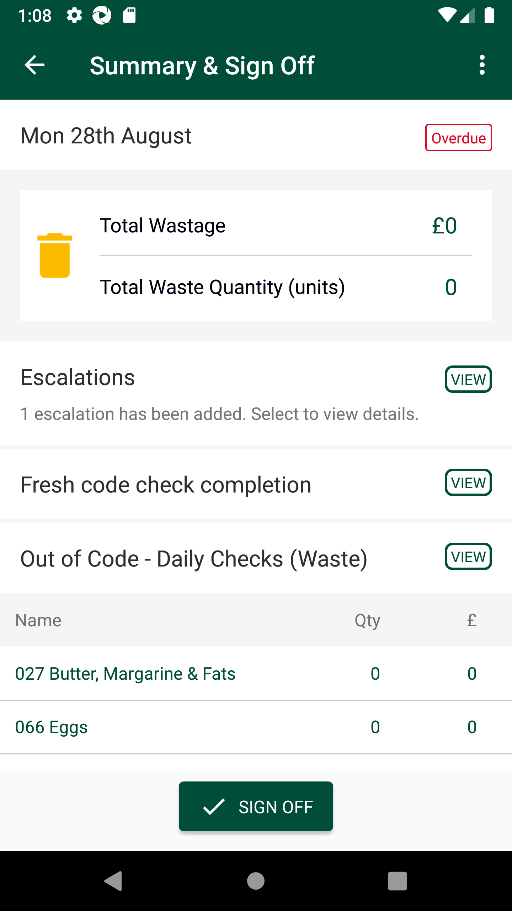
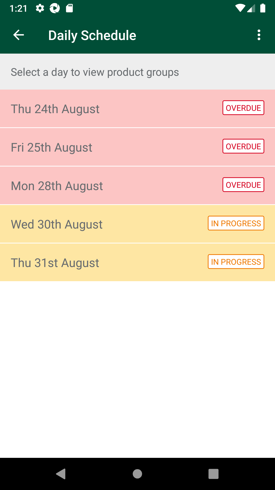
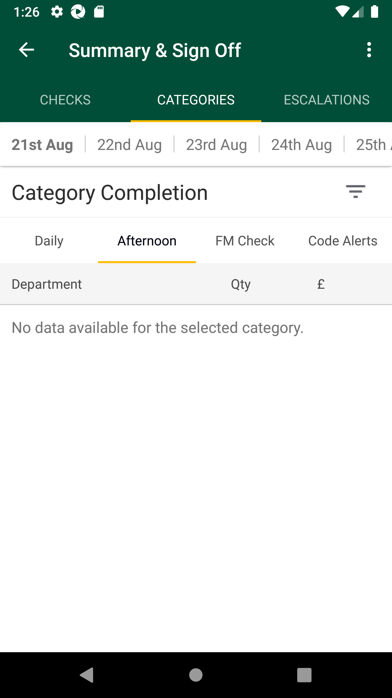

-
Verify Fresh Food Manager Check Summary & Sign Off Screen (Phase2)
19:48:14 PM / 54:10:103 Fail
Verify Fresh Food Manager Check Summary & Sign Off Screen (Phase2)
08.31.2023 19:48:14 08.31.2023 20:12:24 54:10:103 · #test-id=1@regression @NewfccSummaryPassUAT_19Verify Current Day 'Fresh Food Manager Check' Summary & Sign Off PagePassUAT_19Verify Current Day 'Fresh Food Manager Check' Summary & Sign Off PageWhen I enter Username and Password for SMA Manager userAnd I click on login button for SMAThen I click on the main menu "Code Checking"Then I click on "Fresh Code Check"Then I click on "Daily Schedule"And I select current day dateThen I click on "Fresh Food Manager Check"Then I click on "Summary & Sign Off"And I verify Total wastage, wastage amount in pound is displayedAnd I verify Escalations and below text is displayedAnd I verify "Fresh code check completion" is displayedAnd I verify "Out of Code - Daily Checks (Waste)" is displayedAnd I verify department name,wastage qty and amount is displayedFailUAT_20Verify 'Overdue' status for past date 'Fresh Food Manager Check' Summary & Sign Off PageFailUAT_20Verify 'Overdue' status for past date 'Fresh Food Manager Check' Summary & Sign Off PageWhen I enter Username and Password for SMA Manager userAnd I click on login button for SMAThen I click on the main menu "Code Checking"Then I click on "Fresh Code Check"Then I click on "Daily Schedule"And I click past day datecom.morrisons.common.action.Hook.afterScenario(io.cucumber.java.Scenario)Then I click on "Fresh Food Manager Check"Step skippedThen I click on "Summary & Sign Off"Step skippedAnd I verify status as "Overdue"Step skippedFailUAT_21Verify 'Awaiting Sign-Off/Inprogress' status for Current Day 'Fresh Food Manager Check' Summary & Sign Off PageFailUAT_21Verify 'Awaiting Sign-Off/Inprogress' status for Current Day 'Fresh Food Manager Check' Summary & Sign Off PageWhen I enter Username and Password for SMA Manager userAnd I click on login button for SMAThen I click on the main menu "Code Checking"Then I click on "Fresh Code Check"Then I click on "Daily Schedule"And I select current day dateThen I click on "Fresh Food Manager Check"Then I click on "Summary & Sign Off"And I verify status as "In Progress"com.morrisons.common.action.Hook.afterScenario(io.cucumber.java.Scenario)
FailUAT_22Verify 'Total Wastage' Amount in '£' Pounds for yesterday date in 'Fresh Food Manager Check' Summary & Sign Off PageFailUAT_22Verify 'Total Wastage' Amount in '£' Pounds for yesterday date in 'Fresh Food Manager Check' Summary & Sign Off PageWhen I enter Username and Password for SMA Manager userAnd I click on login button for SMAThen I click on the main menu "Code Checking"Then I click on "Fresh Code Check"Then I click on "Daily Schedule"And I click past "2" day datecom.morrisons.common.action.Hook.afterScenario(io.cucumber.java.Scenario)Then I click on "Fresh Food Manager Check"Step skippedThen I click on "Summary & Sign Off"Step skippedAnd I verify Total wastage, wastage amount in pound is displayedStep skippedFailUAT_23Verify 'Escalations' raised yesterday date in 'Fresh Food Manager Check' Summary & Sign Off PageFailUAT_23Verify 'Escalations' raised yesterday date in 'Fresh Food Manager Check' Summary & Sign Off PageWhen I enter Username and Password for SMA Manager userAnd I click on login button for SMAThen I click on the main menu "Code Checking"Then I click on "Fresh Code Check"Then I click on "Daily Schedule"And I select current day dateThen I click on "Fresh Food Manager Check"Then I click on "Summary & Sign Off"And I verify Escalations and below text is displayedThen I click on "Escalations"And I verify escalations listed with View/IncompleteStep undefinedFailUAT_24Verify Manager 'Complete' escalations which as been done yesterday from Daily Checks and Afternoon Checks by completing the department with poor rotation ratingFailUAT_24Verify Manager 'Complete' escalations which as been done yesterday from Daily Checks and Afternoon Checks by completing the department with poor rotation ratingWhen I enter Username and Password for SMA Manager userAnd I click on login button for SMAThen I click on the main menu "Code Checking"Then I click on "Fresh Code Check"Then I click on "Daily Schedule"And I click past "2" day datecom.morrisons.common.action.Hook.afterScenario(io.cucumber.java.Scenario)Then I click on "Fresh Food Manager Check"Step skippedThen I click on "Summary & Sign Off"Step skippedAnd I verify Escalations and below text is displayedStep skippedThen I click on "Escalations"Step skippedAnd I open "INCOMPLETE" status escalationStep skippedAnd I verify Next steps Page HeaderStep skippedAnd I verify Aisle InformationStep skippedAnd I verify Details of Problem FoundStep skippedThen I click on "COMPLETE ESCALATION"Step skippedAnd I verify prompt for next stepStep skippedAnd I verify and select Investigation detailsStep skippedAnd I verify and select Next StepsStep skippedAnd I verify redirection to escalation listStep skippedFailUAT_27Verify Manager allowed to 'Add' new Escalations in FM check 'Fixture' location for product levelFailUAT_27Verify Manager allowed to 'Add' new Escalations in FM check 'Fixture' location for product levelWhen I enter Username and Password for SMA Manager userAnd I click on login button for SMAThen I click on the main menu "Code Checking"Then I click on "Fresh Code Check"Then I click on "Daily Schedule"And I click past "2" day datecom.morrisons.common.action.Hook.afterScenario(io.cucumber.java.Scenario) Then I click on "Fresh Food Manager Check"Step skippedThen I click on "Summary & Sign Off"Step skippedAnd I verify Escalations and below text is displayedStep skippedThen I click on "VIEW"Step skippedThen I click on "ADD NEW ESCALATION"Step skippedThen I click on "Fresh Food Manager Check"Step skippedThen I click on "Fixture"Step skippedAnd I click on "Aisle 0"Step skippedAnd I click on product levelStep skippedAnd I select Details of Problem FoundStep skippedAnd I verify and select Investigation detailsStep skippedAnd I verify and select Next StepsStep skippedAnd I verify redirection to escalation listStep skippedFailUAT_28Verify Manager allowed to 'Add' new Escalations in FM check 'Fixture' location for Department levelFailUAT_28Verify Manager allowed to 'Add' new Escalations in FM check 'Fixture' location for Department levelWhen I enter Username and Password for SMA Manager userAnd I click on login button for SMAThen I click on the main menu "Code Checking"Then I click on "Fresh Code Check"Then I click on "Daily Schedule"And I click past "2" day datecom.morrisons.common.action.Hook.afterScenario(io.cucumber.java.Scenario)Then I click on "Fresh Food Manager Check"Step skippedThen I click on "Summary & Sign Off"Step skippedAnd I verify Escalations and below text is displayedStep skippedThen I click on "VIEW"Step skippedThen I click on "ADD NEW ESCALATION"Step skippedThen I click on "Fresh Food Manager Check"Step skippedThen I click on "Fixture"Step skippedAnd I click on "Aisle 0"Step skippedAnd I click on product and department levelStep skippedAnd I select Details of Problem FoundStep skippedAnd I verify and select Investigation detailsStep skippedAnd I verify and select Next StepsStep skippedAnd I verify redirection to escalation listStep skippedFailUAT_29Verify Manager allowed to 'Add' new Escalations in FM check 'Promotions' location for Product levelFailUAT_29Verify Manager allowed to 'Add' new Escalations in FM check 'Promotions' location for Product levelWhen I enter Username and Password for SMA Manager userAnd I click on login button for SMAThen I click on the main menu "Code Checking"Then I click on "Fresh Code Check"Then I click on "Daily Schedule"And I click past "2" day datecom.morrisons.common.action.Hook.afterScenario(io.cucumber.java.Scenario)Then I click on "Fresh Food Manager Check"Step skippedThen I click on "Summary & Sign Off"Step skippedAnd I verify Escalations and below text is displayedStep skippedThen I click on "VIEW"Step skippedThen I click on "ADD NEW ESCALATION"Step skippedThen I click on "Fresh Food Manager Check"Step skippedThen I click on "Promotions"Step skippedAnd I click on product levelStep skippedAnd I select Details of Problem FoundStep skippedAnd I verify and select Investigation detailsStep skippedAnd I verify and select Next StepsStep skippedAnd I verify redirection to escalation listStep skippedFailUAT_30Verify Manager allowed to 'Add' new Escalations in FM check 'Promotions' location for Department levelFailUAT_30Verify Manager allowed to 'Add' new Escalations in FM check 'Promotions' location for Department levelWhen I enter Username and Password for SMA Manager userAnd I click on login button for SMAThen I click on the main menu "Code Checking"Then I click on "Fresh Code Check"Then I click on "Daily Schedule"And I click past "2" day datecom.morrisons.common.action.Hook.afterScenario(io.cucumber.java.Scenario)
Then I click on "Fresh Food Manager Check"Step skippedThen I click on "Summary & Sign Off"Step skippedAnd I verify Escalations and below text is displayedStep skippedThen I click on "VIEW"Step skippedThen I click on "ADD NEW ESCALATION"Step skippedThen I click on "Fresh Food Manager Check"Step skippedThen I click on "Fixture"Step skippedAnd I click on "Aisle 0"Step skippedAnd I click on product levelStep skippedAnd I select Details of Problem FoundStep skippedAnd I verify and select Investigation detailsStep skippedAnd I verify and select Next StepsStep skippedAnd I verify redirection to escalation listStep skippedFailUAT_28Verify Manager allowed to 'Add' new Escalations in FM check 'Fixture' location for Department levelFailUAT_28Verify Manager allowed to 'Add' new Escalations in FM check 'Fixture' location for Department levelWhen I enter Username and Password for SMA Manager userAnd I click on login button for SMAThen I click on the main menu "Code Checking"Then I click on "Fresh Code Check"Then I click on "Daily Schedule"And I click past "2" day datecom.morrisons.common.action.Hook.afterScenario(io.cucumber.java.Scenario)Then I click on "Fresh Food Manager Check"Step skippedThen I click on "Summary & Sign Off"Step skippedAnd I verify Escalations and below text is displayedStep skippedThen I click on "VIEW"Step skippedThen I click on "ADD NEW ESCALATION"Step skippedThen I click on "Fresh Food Manager Check"Step skippedThen I click on "Fixture"Step skippedAnd I click on "Aisle 0"Step skippedAnd I click on product and department levelStep skippedAnd I select Details of Problem FoundStep skippedAnd I verify and select Investigation detailsStep skippedAnd I verify and select Next StepsStep skippedAnd I verify redirection to escalation listStep skippedFailUAT_29Verify Manager allowed to 'Add' new Escalations in FM check 'Promotions' location for Product levelFailUAT_29Verify Manager allowed to 'Add' new Escalations in FM check 'Promotions' location for Product levelWhen I enter Username and Password for SMA Manager userAnd I click on login button for SMAThen I click on the main menu "Code Checking"Then I click on "Fresh Code Check"Then I click on "Daily Schedule"And I click past "2" day datecom.morrisons.common.action.Hook.afterScenario(io.cucumber.java.Scenario)Then I click on "Fresh Food Manager Check"Step skippedThen I click on "Summary & Sign Off"Step skippedAnd I verify Escalations and below text is displayedStep skippedThen I click on "VIEW"Step skippedThen I click on "ADD NEW ESCALATION"Step skippedThen I click on "Fresh Food Manager Check"Step skippedThen I click on "Promotions"Step skippedAnd I click on product levelStep skippedAnd I select Details of Problem FoundStep skippedAnd I verify and select Investigation detailsStep skippedAnd I verify and select Next StepsStep skippedAnd I verify redirection to escalation listStep skippedFailUAT_30Verify Manager allowed to 'Add' new Escalations in FM check 'Promotions' location for Department levelFailUAT_30Verify Manager allowed to 'Add' new Escalations in FM check 'Promotions' location for Department levelWhen I enter Username and Password for SMA Manager userAnd I click on login button for SMAThen I click on the main menu "Code Checking"Then I click on "Fresh Code Check"Then I click on "Daily Schedule"And I click past "2" day datecom.morrisons.common.action.Hook.afterScenario(io.cucumber.java.Scenario) Then I click on "Fresh Food Manager Check"Step skippedThen I click on "Summary & Sign Off"Step skippedAnd I verify Escalations and below text is displayedStep skippedThen I click on "VIEW"Step skippedThen I click on "ADD NEW ESCALATION"Step skippedThen I click on "Fresh Food Manager Check"Step skippedThen I click on "Promotions"Step skippedAnd I click on product and department levelStep skippedAnd I select Details of Problem FoundStep skippedAnd I verify and select Investigation detailsStep skippedAnd I verify and select Next StepsStep skippedAnd I verify redirection to escalation listStep skippedFailUAT_31Verify Manager allowed to 'Add' new Escalations in FM check 'Warehouse' location for Product levelFailUAT_31Verify Manager allowed to 'Add' new Escalations in FM check 'Warehouse' location for Product levelWhen I enter Username and Password for SMA Manager userAnd I click on login button for SMAThen I click on the main menu "Code Checking"Then I click on "Fresh Code Check"Then I click on "Daily Schedule"And I click past "2" day datecom.morrisons.common.action.Hook.afterScenario(io.cucumber.java.Scenario)
Then I click on "Fresh Food Manager Check"Step skippedThen I click on "Summary & Sign Off"Step skippedAnd I verify Escalations and below text is displayedStep skippedThen I click on "VIEW"Step skippedThen I click on "ADD NEW ESCALATION"Step skippedThen I click on "Fresh Food Manager Check"Step skippedThen I click on "Promotions"Step skippedAnd I click on product and department levelStep skippedAnd I select Details of Problem FoundStep skippedAnd I verify and select Investigation detailsStep skippedAnd I verify and select Next StepsStep skippedAnd I verify redirection to escalation listStep skippedFailUAT_31Verify Manager allowed to 'Add' new Escalations in FM check 'Warehouse' location for Product levelFailUAT_31Verify Manager allowed to 'Add' new Escalations in FM check 'Warehouse' location for Product levelWhen I enter Username and Password for SMA Manager userAnd I click on login button for SMAThen I click on the main menu "Code Checking"Then I click on "Fresh Code Check"Then I click on "Daily Schedule"And I click past "2" day datecom.morrisons.common.action.Hook.afterScenario(io.cucumber.java.Scenario) Then I click on "Fresh Food Manager Check"Step skippedThen I click on "Summary & Sign Off"Step skippedAnd I verify Escalations and below text is displayedStep skippedThen I click on "VIEW"Step skippedThen I click on "ADD NEW ESCALATION"Step skippedThen I click on "Fresh Food Manager Check"Step skippedThen I click on "Warehouse"Step skippedAnd I click on product levelStep skippedAnd I select Details of Problem FoundStep skippedAnd I verify and select Investigation detailsStep skippedAnd I verify and select Next StepsStep skippedAnd I verify redirection to escalation listStep skippedFailUAT_32Verify Manager allowed to 'Add' new Escalations in FM check 'Warehouse' location for Department levelFailUAT_32Verify Manager allowed to 'Add' new Escalations in FM check 'Warehouse' location for Department levelWhen I enter Username and Password for SMA Manager userAnd I click on login button for SMAThen I click on the main menu "Code Checking"Then I click on "Fresh Code Check"Then I click on "Daily Schedule"And I click past "2" day datecom.morrisons.common.action.Hook.afterScenario(io.cucumber.java.Scenario)Then I click on "Fresh Food Manager Check"Step skippedThen I click on "Summary & Sign Off"Step skippedAnd I verify Escalations and below text is displayedStep skippedThen I click on "VIEW"Step skippedThen I click on "ADD NEW ESCALATION"Step skippedThen I click on "Fresh Food Manager Check"Step skippedThen I click on "Warehouse"Step skippedAnd I click on product and department levelStep skippedAnd I select Details of Problem FoundStep skippedAnd I verify and select Investigation detailsStep skippedAnd I verify and select Next StepsStep skippedAnd I verify redirection to escalation listStep skippedFailUAT_33Verify Manager allowed to 'Add' new Escalations in FM check ' Critical Checks ' location for Department levelFailUAT_33Verify Manager allowed to 'Add' new Escalations in FM check ' Critical Checks ' location for Department levelWhen I enter Username and Password for SMA Manager userAnd I click on login button for SMAThen I click on the main menu "Code Checking"Then I click on "Fresh Code Check"Then I click on "Daily Schedule"And I click past "2" day datecom.morrisons.common.action.Hook.afterScenario(io.cucumber.java.Scenario)Then I click on "Fresh Food Manager Check"Step skippedThen I click on "Summary & Sign Off"Step skippedAnd I verify Escalations and below text is displayedStep skippedThen I click on "VIEW"Step skippedThen I click on "ADD NEW ESCALATION"Step skippedThen I click on "Fresh Food Manager Check"Step skippedThen I click on "Critical Checks"Step skippedAnd I click on product and department levelStep skippedAnd I select Details of Problem FoundStep skippedAnd I verify and select Investigation detailsStep skippedAnd I verify and select Next StepsStep skippedAnd I verify redirection to escalation listStep skippedFailUAT_34Verify Manager allowed to 'Add' new Escalations in FM check ' Critical Checks ' location for Product levelFailUAT_34Verify Manager allowed to 'Add' new Escalations in FM check ' Critical Checks ' location for Product levelWhen I enter Username and Password for SMA Manager userAnd I click on login button for SMAThen I click on the main menu "Code Checking"Then I click on "Fresh Code Check"Then I click on "Daily Schedule"And I click past "2" day datecom.morrisons.common.action.Hook.afterScenario(io.cucumber.java.Scenario)
Then I click on "Fresh Food Manager Check"Step skippedThen I click on "Summary & Sign Off"Step skippedAnd I verify Escalations and below text is displayedStep skippedThen I click on "VIEW"Step skippedThen I click on "ADD NEW ESCALATION"Step skippedThen I click on "Fresh Food Manager Check"Step skippedThen I click on "Warehouse"Step skippedAnd I click on product levelStep skippedAnd I select Details of Problem FoundStep skippedAnd I verify and select Investigation detailsStep skippedAnd I verify and select Next StepsStep skippedAnd I verify redirection to escalation listStep skippedFailUAT_32Verify Manager allowed to 'Add' new Escalations in FM check 'Warehouse' location for Department levelFailUAT_32Verify Manager allowed to 'Add' new Escalations in FM check 'Warehouse' location for Department levelWhen I enter Username and Password for SMA Manager userAnd I click on login button for SMAThen I click on the main menu "Code Checking"Then I click on "Fresh Code Check"Then I click on "Daily Schedule"And I click past "2" day datecom.morrisons.common.action.Hook.afterScenario(io.cucumber.java.Scenario)Then I click on "Fresh Food Manager Check"Step skippedThen I click on "Summary & Sign Off"Step skippedAnd I verify Escalations and below text is displayedStep skippedThen I click on "VIEW"Step skippedThen I click on "ADD NEW ESCALATION"Step skippedThen I click on "Fresh Food Manager Check"Step skippedThen I click on "Warehouse"Step skippedAnd I click on product and department levelStep skippedAnd I select Details of Problem FoundStep skippedAnd I verify and select Investigation detailsStep skippedAnd I verify and select Next StepsStep skippedAnd I verify redirection to escalation listStep skippedFailUAT_33Verify Manager allowed to 'Add' new Escalations in FM check ' Critical Checks ' location for Department levelFailUAT_33Verify Manager allowed to 'Add' new Escalations in FM check ' Critical Checks ' location for Department levelWhen I enter Username and Password for SMA Manager userAnd I click on login button for SMAThen I click on the main menu "Code Checking"Then I click on "Fresh Code Check"Then I click on "Daily Schedule"And I click past "2" day datecom.morrisons.common.action.Hook.afterScenario(io.cucumber.java.Scenario)Then I click on "Fresh Food Manager Check"Step skippedThen I click on "Summary & Sign Off"Step skippedAnd I verify Escalations and below text is displayedStep skippedThen I click on "VIEW"Step skippedThen I click on "ADD NEW ESCALATION"Step skippedThen I click on "Fresh Food Manager Check"Step skippedThen I click on "Critical Checks"Step skippedAnd I click on product and department levelStep skippedAnd I select Details of Problem FoundStep skippedAnd I verify and select Investigation detailsStep skippedAnd I verify and select Next StepsStep skippedAnd I verify redirection to escalation listStep skippedFailUAT_34Verify Manager allowed to 'Add' new Escalations in FM check ' Critical Checks ' location for Product levelFailUAT_34Verify Manager allowed to 'Add' new Escalations in FM check ' Critical Checks ' location for Product levelWhen I enter Username and Password for SMA Manager userAnd I click on login button for SMAThen I click on the main menu "Code Checking"Then I click on "Fresh Code Check"Then I click on "Daily Schedule"And I click past "2" day datecom.morrisons.common.action.Hook.afterScenario(io.cucumber.java.Scenario) Then I click on "Fresh Food Manager Check"Step skippedThen I click on "Summary & Sign Off"Step skippedAnd I verify Escalations and below text is displayedStep skippedThen I click on "VIEW"Step skippedThen I click on "ADD NEW ESCALATION"Step skippedThen I click on "Fresh Food Manager Check"Step skippedThen I click on "Critical Checks"Step skippedAnd I click on product levelStep skippedAnd I select Details of Problem FoundStep skippedAnd I verify and select Investigation detailsStep skippedAnd I verify and select Next StepsStep skippedAnd I verify redirection to escalation listStep skippedFailUAT_35Verify Manager allowed to 'Add' new Escalations in Afternoon Checks 'Fixture' location for product levelFailUAT_35Verify Manager allowed to 'Add' new Escalations in Afternoon Checks 'Fixture' location for product levelWhen I enter Username and Password for SMA Manager userAnd I click on login button for SMAThen I click on the main menu "Code Checking"Then I click on "Fresh Code Check"Then I click on "Daily Schedule"And I click past "2" day datecom.morrisons.common.action.Hook.afterScenario(io.cucumber.java.Scenario)
Then I click on "Fresh Food Manager Check"Step skippedThen I click on "Summary & Sign Off"Step skippedAnd I verify Escalations and below text is displayedStep skippedThen I click on "VIEW"Step skippedThen I click on "ADD NEW ESCALATION"Step skippedThen I click on "Fresh Food Manager Check"Step skippedThen I click on "Critical Checks"Step skippedAnd I click on product levelStep skippedAnd I select Details of Problem FoundStep skippedAnd I verify and select Investigation detailsStep skippedAnd I verify and select Next StepsStep skippedAnd I verify redirection to escalation listStep skippedFailUAT_35Verify Manager allowed to 'Add' new Escalations in Afternoon Checks 'Fixture' location for product levelFailUAT_35Verify Manager allowed to 'Add' new Escalations in Afternoon Checks 'Fixture' location for product levelWhen I enter Username and Password for SMA Manager userAnd I click on login button for SMAThen I click on the main menu "Code Checking"Then I click on "Fresh Code Check"Then I click on "Daily Schedule"And I click past "2" day datecom.morrisons.common.action.Hook.afterScenario(io.cucumber.java.Scenario) Then I click on "Fresh Food Manager Check"Step skippedThen I click on "Summary & Sign Off"Step skippedAnd I verify Escalations and below text is displayedStep skippedThen I click on "VIEW"Step skippedThen I click on "ADD NEW ESCALATION"Step skippedThen I click on "Afternoon Checks"Step skippedThen I click on "Fixture"Step skippedAnd I click on "Aisle 70"Step skippedAnd I click on product levelStep skippedAnd I select Details of Problem FoundStep skippedAnd I verify and select Investigation detailsStep skippedAnd I verify and select Next StepsStep skippedAnd I verify redirection to escalation listStep skippedFailUAT_36Verify Manager allowed to 'Add' new Escalations in Afternoon Checks 'Fixture' location for Department levelFailUAT_36Verify Manager allowed to 'Add' new Escalations in Afternoon Checks 'Fixture' location for Department levelWhen I enter Username and Password for SMA Manager userAnd I click on login button for SMAThen I click on the main menu "Code Checking"Then I click on "Fresh Code Check"Then I click on "Daily Schedule"And I click past "2" day datecom.morrisons.common.action.Hook.afterScenario(io.cucumber.java.Scenario)Then I click on "Fresh Food Manager Check"Step skippedThen I click on "Summary & Sign Off"Step skippedAnd I verify Escalations and below text is displayedStep skippedThen I click on "VIEW"Step skippedThen I click on "ADD NEW ESCALATION"Step skippedThen I click on "Afternoon Checks"Step skippedThen I click on "Fixture"Step skippedAnd I click on "Aisle 70"Step skippedAnd I click on product and department levelStep skippedAnd I select Details of Problem FoundStep skippedAnd I verify and select Investigation detailsStep skippedAnd I verify and select Next StepsStep skippedAnd I verify redirection to escalation listStep skippedFailUAT_37Verify Manager allowed to 'Add' new Escalations in Afternoon Checks 'Promotions' location for Product levelFailUAT_37Verify Manager allowed to 'Add' new Escalations in Afternoon Checks 'Promotions' location for Product levelWhen I enter Username and Password for SMA Manager userAnd I click on login button for SMAThen I click on the main menu "Code Checking"Then I click on "Fresh Code Check"Then I click on "Daily Schedule"And I click past "2" day datecom.morrisons.common.action.Hook.afterScenario(io.cucumber.java.Scenario)Then I click on "Fresh Food Manager Check"Step skippedThen I click on "Summary & Sign Off"Step skippedAnd I verify Escalations and below text is displayedStep skippedThen I click on "VIEW"Step skippedThen I click on "ADD NEW ESCALATION"Step skippedThen I click on "Afternoon Checks"Step skippedThen I click on "Promotions"Step skippedAnd I click on product levelStep skippedAnd I select Details of Problem FoundStep skippedAnd I verify and select Investigation detailsStep skippedAnd I verify and select Next StepsStep skippedAnd I verify redirection to escalation listStep skippedFailUAT_38Verify Manager allowed to 'Add' new Escalations in Afternoon Checks 'Promotions' location for Department levelFailUAT_38Verify Manager allowed to 'Add' new Escalations in Afternoon Checks 'Promotions' location for Department levelWhen I enter Username and Password for SMA Manager userAnd I click on login button for SMAThen I click on the main menu "Code Checking"Then I click on "Fresh Code Check"Then I click on "Daily Schedule"And I click past "2" day datecom.morrisons.common.action.Hook.afterScenario(io.cucumber.java.Scenario)
Then I click on "Fresh Food Manager Check"Step skippedThen I click on "Summary & Sign Off"Step skippedAnd I verify Escalations and below text is displayedStep skippedThen I click on "VIEW"Step skippedThen I click on "ADD NEW ESCALATION"Step skippedThen I click on "Afternoon Checks"Step skippedThen I click on "Fixture"Step skippedAnd I click on "Aisle 70"Step skippedAnd I click on product levelStep skippedAnd I select Details of Problem FoundStep skippedAnd I verify and select Investigation detailsStep skippedAnd I verify and select Next StepsStep skippedAnd I verify redirection to escalation listStep skippedFailUAT_36Verify Manager allowed to 'Add' new Escalations in Afternoon Checks 'Fixture' location for Department levelFailUAT_36Verify Manager allowed to 'Add' new Escalations in Afternoon Checks 'Fixture' location for Department levelWhen I enter Username and Password for SMA Manager userAnd I click on login button for SMAThen I click on the main menu "Code Checking"Then I click on "Fresh Code Check"Then I click on "Daily Schedule"And I click past "2" day datecom.morrisons.common.action.Hook.afterScenario(io.cucumber.java.Scenario)Then I click on "Fresh Food Manager Check"Step skippedThen I click on "Summary & Sign Off"Step skippedAnd I verify Escalations and below text is displayedStep skippedThen I click on "VIEW"Step skippedThen I click on "ADD NEW ESCALATION"Step skippedThen I click on "Afternoon Checks"Step skippedThen I click on "Fixture"Step skippedAnd I click on "Aisle 70"Step skippedAnd I click on product and department levelStep skippedAnd I select Details of Problem FoundStep skippedAnd I verify and select Investigation detailsStep skippedAnd I verify and select Next StepsStep skippedAnd I verify redirection to escalation listStep skippedFailUAT_37Verify Manager allowed to 'Add' new Escalations in Afternoon Checks 'Promotions' location for Product levelFailUAT_37Verify Manager allowed to 'Add' new Escalations in Afternoon Checks 'Promotions' location for Product levelWhen I enter Username and Password for SMA Manager userAnd I click on login button for SMAThen I click on the main menu "Code Checking"Then I click on "Fresh Code Check"Then I click on "Daily Schedule"And I click past "2" day datecom.morrisons.common.action.Hook.afterScenario(io.cucumber.java.Scenario)Then I click on "Fresh Food Manager Check"Step skippedThen I click on "Summary & Sign Off"Step skippedAnd I verify Escalations and below text is displayedStep skippedThen I click on "VIEW"Step skippedThen I click on "ADD NEW ESCALATION"Step skippedThen I click on "Afternoon Checks"Step skippedThen I click on "Promotions"Step skippedAnd I click on product levelStep skippedAnd I select Details of Problem FoundStep skippedAnd I verify and select Investigation detailsStep skippedAnd I verify and select Next StepsStep skippedAnd I verify redirection to escalation listStep skippedFailUAT_38Verify Manager allowed to 'Add' new Escalations in Afternoon Checks 'Promotions' location for Department levelFailUAT_38Verify Manager allowed to 'Add' new Escalations in Afternoon Checks 'Promotions' location for Department levelWhen I enter Username and Password for SMA Manager userAnd I click on login button for SMAThen I click on the main menu "Code Checking"Then I click on "Fresh Code Check"Then I click on "Daily Schedule"And I click past "2" day datecom.morrisons.common.action.Hook.afterScenario(io.cucumber.java.Scenario) Then I click on "Fresh Food Manager Check"Step skippedThen I click on "Summary & Sign Off"Step skippedAnd I verify Escalations and below text is displayedStep skippedThen I click on "VIEW"Step skippedThen I click on "ADD NEW ESCALATION"Step skippedThen I click on "Afternoon Checks"Step skippedThen I click on "Promotions"Step skippedAnd I click on product and department levelStep skippedAnd I select Details of Problem FoundStep skippedAnd I verify and select Investigation detailsStep skippedAnd I verify and select Next StepsStep skippedAnd I verify redirection to escalation listStep skippedFailUAT_39Verify Manager allowed to 'Add' new Escalations in Afternoon Checks 'Warehouse' location for Product levelFailUAT_39Verify Manager allowed to 'Add' new Escalations in Afternoon Checks 'Warehouse' location for Product levelWhen I enter Username and Password for SMA Manager userAnd I click on login button for SMAThen I click on the main menu "Code Checking"Then I click on "Fresh Code Check"Then I click on "Daily Schedule"And I click past "2" day datecom.morrisons.common.action.Hook.afterScenario(io.cucumber.java.Scenario)Then I click on "Fresh Food Manager Check"Step skippedThen I click on "Summary & Sign Off"Step skippedAnd I verify Escalations and below text is displayedStep skippedThen I click on "VIEW"Step skippedThen I click on "ADD NEW ESCALATION"Step skippedThen I click on "Afternoon Checks"Step skippedThen I click on "Warehouse"Step skippedAnd I click on product levelStep skippedAnd I select Details of Problem FoundStep skippedAnd I verify and select Investigation detailsStep skippedAnd I verify and select Next StepsStep skippedAnd I verify redirection to escalation listStep skippedFailUAT_40Verify Manager allowed to 'Add' new Escalations in Afternoon Checks 'Warehouse' location for Department levelFailUAT_40Verify Manager allowed to 'Add' new Escalations in Afternoon Checks 'Warehouse' location for Department levelWhen I enter Username and Password for SMA Manager userAnd I click on login button for SMAThen I click on the main menu "Code Checking"Then I click on "Fresh Code Check"Then I click on "Daily Schedule"And I click past "2" day datecom.morrisons.common.action.Hook.afterScenario(io.cucumber.java.Scenario)
Then I click on "Fresh Food Manager Check"Step skippedThen I click on "Summary & Sign Off"Step skippedAnd I verify Escalations and below text is displayedStep skippedThen I click on "VIEW"Step skippedThen I click on "ADD NEW ESCALATION"Step skippedThen I click on "Afternoon Checks"Step skippedThen I click on "Promotions"Step skippedAnd I click on product and department levelStep skippedAnd I select Details of Problem FoundStep skippedAnd I verify and select Investigation detailsStep skippedAnd I verify and select Next StepsStep skippedAnd I verify redirection to escalation listStep skippedFailUAT_39Verify Manager allowed to 'Add' new Escalations in Afternoon Checks 'Warehouse' location for Product levelFailUAT_39Verify Manager allowed to 'Add' new Escalations in Afternoon Checks 'Warehouse' location for Product levelWhen I enter Username and Password for SMA Manager userAnd I click on login button for SMAThen I click on the main menu "Code Checking"Then I click on "Fresh Code Check"Then I click on "Daily Schedule"And I click past "2" day datecom.morrisons.common.action.Hook.afterScenario(io.cucumber.java.Scenario)Then I click on "Fresh Food Manager Check"Step skippedThen I click on "Summary & Sign Off"Step skippedAnd I verify Escalations and below text is displayedStep skippedThen I click on "VIEW"Step skippedThen I click on "ADD NEW ESCALATION"Step skippedThen I click on "Afternoon Checks"Step skippedThen I click on "Warehouse"Step skippedAnd I click on product levelStep skippedAnd I select Details of Problem FoundStep skippedAnd I verify and select Investigation detailsStep skippedAnd I verify and select Next StepsStep skippedAnd I verify redirection to escalation listStep skippedFailUAT_40Verify Manager allowed to 'Add' new Escalations in Afternoon Checks 'Warehouse' location for Department levelFailUAT_40Verify Manager allowed to 'Add' new Escalations in Afternoon Checks 'Warehouse' location for Department levelWhen I enter Username and Password for SMA Manager userAnd I click on login button for SMAThen I click on the main menu "Code Checking"Then I click on "Fresh Code Check"Then I click on "Daily Schedule"And I click past "2" day datecom.morrisons.common.action.Hook.afterScenario(io.cucumber.java.Scenario) Then I click on "Fresh Food Manager Check"Step skippedThen I click on "Summary & Sign Off"Step skippedAnd I verify Escalations and below text is displayedStep skippedThen I click on "VIEW"Step skippedThen I click on "ADD NEW ESCALATION"Step skippedThen I click on "Afternoon Checks"Step skippedThen I click on "Warehouse"Step skippedAnd I click on product and department levelStep skippedAnd I select Details of Problem FoundStep skippedAnd I verify and select Investigation detailsStep skippedAnd I verify and select Next StepsStep skippedAnd I verify redirection to escalation listStep skippedFailUAT_41Verify Manager allowed to 'Add' new Escalations in Afternoon Checks ' Critical Checks ' location for Department levelFailUAT_41Verify Manager allowed to 'Add' new Escalations in Afternoon Checks ' Critical Checks ' location for Department levelWhen I enter Username and Password for SMA Manager userAnd I click on login button for SMAThen I click on the main menu "Code Checking"Then I click on "Fresh Code Check"Then I click on "Daily Schedule"And I click past "2" day datecom.morrisons.common.action.Hook.afterScenario(io.cucumber.java.Scenario)Then I click on "Fresh Food Manager Check"Step skippedThen I click on "Summary & Sign Off"Step skippedAnd I verify Escalations and below text is displayedStep skippedThen I click on "VIEW"Step skippedThen I click on "ADD NEW ESCALATION"Step skippedThen I click on "Afternoon Checks"Step skippedThen I click on "Critical Checks"Step skippedAnd I click on product and department levelStep skippedAnd I select Details of Problem FoundStep skippedAnd I verify and select Investigation detailsStep skippedAnd I verify and select Next StepsStep skippedAnd I verify redirection to escalation listStep skippedFailUAT_42Verify Manager allowed to 'Add' new Escalations in Afternoon Checks ' Critical Checks ' location for Product levelFailUAT_42Verify Manager allowed to 'Add' new Escalations in Afternoon Checks ' Critical Checks ' location for Product levelWhen I enter Username and Password for SMA Manager userAnd I click on login button for SMAThen I click on the main menu "Code Checking"Then I click on "Fresh Code Check"Then I click on "Daily Schedule"And I click past "2" day datecom.morrisons.common.action.Hook.afterScenario(io.cucumber.java.Scenario)Then I click on "Fresh Food Manager Check"Step skippedThen I click on "Summary & Sign Off"Step skippedAnd I verify Escalations and below text is displayedStep skippedThen I click on "VIEW"Step skippedThen I click on "ADD NEW ESCALATION"Step skippedThen I click on "Afternoon Checks"Step skippedThen I click on "Critical Checks"Step skippedAnd I click on product levelStep skippedAnd I select Details of Problem FoundStep skippedAnd I verify and select Investigation detailsStep skippedAnd I verify and select Next StepsStep skippedAnd I verify redirection to escalation listStep skippedFailUAT_43Verify Manager allowed to 'Add' new Escalations in Daily Checks 'Fixture' location for product levelFailUAT_43Verify Manager allowed to 'Add' new Escalations in Daily Checks 'Fixture' location for product levelWhen I enter Username and Password for SMA Manager userAnd I click on login button for SMAThen I click on the main menu "Code Checking"Then I click on "Fresh Code Check"Then I click on "Daily Schedule"And I click past "2" day datecom.morrisons.common.action.Hook.afterScenario(io.cucumber.java.Scenario)
Then I click on "Fresh Food Manager Check"Step skippedThen I click on "Summary & Sign Off"Step skippedAnd I verify Escalations and below text is displayedStep skippedThen I click on "VIEW"Step skippedThen I click on "ADD NEW ESCALATION"Step skippedThen I click on "Afternoon Checks"Step skippedThen I click on "Warehouse"Step skippedAnd I click on product and department levelStep skippedAnd I select Details of Problem FoundStep skippedAnd I verify and select Investigation detailsStep skippedAnd I verify and select Next StepsStep skippedAnd I verify redirection to escalation listStep skippedFailUAT_41Verify Manager allowed to 'Add' new Escalations in Afternoon Checks ' Critical Checks ' location for Department levelFailUAT_41Verify Manager allowed to 'Add' new Escalations in Afternoon Checks ' Critical Checks ' location for Department levelWhen I enter Username and Password for SMA Manager userAnd I click on login button for SMAThen I click on the main menu "Code Checking"Then I click on "Fresh Code Check"Then I click on "Daily Schedule"And I click past "2" day datecom.morrisons.common.action.Hook.afterScenario(io.cucumber.java.Scenario)Then I click on "Fresh Food Manager Check"Step skippedThen I click on "Summary & Sign Off"Step skippedAnd I verify Escalations and below text is displayedStep skippedThen I click on "VIEW"Step skippedThen I click on "ADD NEW ESCALATION"Step skippedThen I click on "Afternoon Checks"Step skippedThen I click on "Critical Checks"Step skippedAnd I click on product and department levelStep skippedAnd I select Details of Problem FoundStep skippedAnd I verify and select Investigation detailsStep skippedAnd I verify and select Next StepsStep skippedAnd I verify redirection to escalation listStep skippedFailUAT_42Verify Manager allowed to 'Add' new Escalations in Afternoon Checks ' Critical Checks ' location for Product levelFailUAT_42Verify Manager allowed to 'Add' new Escalations in Afternoon Checks ' Critical Checks ' location for Product levelWhen I enter Username and Password for SMA Manager userAnd I click on login button for SMAThen I click on the main menu "Code Checking"Then I click on "Fresh Code Check"Then I click on "Daily Schedule"And I click past "2" day datecom.morrisons.common.action.Hook.afterScenario(io.cucumber.java.Scenario)Then I click on "Fresh Food Manager Check"Step skippedThen I click on "Summary & Sign Off"Step skippedAnd I verify Escalations and below text is displayedStep skippedThen I click on "VIEW"Step skippedThen I click on "ADD NEW ESCALATION"Step skippedThen I click on "Afternoon Checks"Step skippedThen I click on "Critical Checks"Step skippedAnd I click on product levelStep skippedAnd I select Details of Problem FoundStep skippedAnd I verify and select Investigation detailsStep skippedAnd I verify and select Next StepsStep skippedAnd I verify redirection to escalation listStep skippedFailUAT_43Verify Manager allowed to 'Add' new Escalations in Daily Checks 'Fixture' location for product levelFailUAT_43Verify Manager allowed to 'Add' new Escalations in Daily Checks 'Fixture' location for product levelWhen I enter Username and Password for SMA Manager userAnd I click on login button for SMAThen I click on the main menu "Code Checking"Then I click on "Fresh Code Check"Then I click on "Daily Schedule"And I click past "2" day datecom.morrisons.common.action.Hook.afterScenario(io.cucumber.java.Scenario) Then I click on "Fresh Food Manager Check"Step skippedThen I click on "Summary & Sign Off"Step skippedAnd I verify Escalations and below text is displayedStep skippedThen I click on "VIEW"Step skippedThen I click on "ADD NEW ESCALATION"Step skippedThen I click on "Daily Checks"Step skippedThen I click on "Fixture"Step skippedAnd I click on "Aisle 22"Step skippedAnd I click on product levelStep skippedAnd I select Details of Problem FoundStep skippedAnd I verify and select Investigation detailsStep skippedAnd I verify and select Next StepsStep skippedAnd I verify redirection to escalation listStep skippedFailUAT_44Verify Manager allowed to 'Add' new Escalations in Daily Checks 'Fixture' location for Department levelFailUAT_44Verify Manager allowed to 'Add' new Escalations in Daily Checks 'Fixture' location for Department levelWhen I enter Username and Password for SMA Manager userAnd I click on login button for SMAThen I click on the main menu "Code Checking"Then I click on "Fresh Code Check"Then I click on "Daily Schedule"And I click past "2" day datecom.morrisons.common.action.Hook.afterScenario(io.cucumber.java.Scenario)Then I click on "Fresh Food Manager Check"Step skippedThen I click on "Summary & Sign Off"Step skippedAnd I verify Escalations and below text is displayedStep skippedThen I click on "VIEW"Step skippedThen I click on "ADD NEW ESCALATION"Step skippedThen I click on "Daily Checks"Step skippedThen I click on "Fixture"Step skippedAnd I click on "Aisle 22"Step skippedAnd I click on product and department levelStep skippedAnd I select Details of Problem FoundStep skippedAnd I verify and select Investigation detailsStep skippedAnd I verify and select Next StepsStep skippedAnd I verify redirection to escalation listStep skippedFailUAT_45Verify Manager allowed to 'Add' new Escalations in Daily Checks 'Promotions' location for Product levelFailUAT_45Verify Manager allowed to 'Add' new Escalations in Daily Checks 'Promotions' location for Product levelWhen I enter Username and Password for SMA Manager userAnd I click on login button for SMAThen I click on the main menu "Code Checking"Then I click on "Fresh Code Check"Then I click on "Daily Schedule"And I click past "2" day datecom.morrisons.common.action.Hook.afterScenario(io.cucumber.java.Scenario)
Then I click on "Fresh Food Manager Check"Step skippedThen I click on "Summary & Sign Off"Step skippedAnd I verify Escalations and below text is displayedStep skippedThen I click on "VIEW"Step skippedThen I click on "ADD NEW ESCALATION"Step skippedThen I click on "Daily Checks"Step skippedThen I click on "Fixture"Step skippedAnd I click on "Aisle 22"Step skippedAnd I click on product levelStep skippedAnd I select Details of Problem FoundStep skippedAnd I verify and select Investigation detailsStep skippedAnd I verify and select Next StepsStep skippedAnd I verify redirection to escalation listStep skippedFailUAT_44Verify Manager allowed to 'Add' new Escalations in Daily Checks 'Fixture' location for Department levelFailUAT_44Verify Manager allowed to 'Add' new Escalations in Daily Checks 'Fixture' location for Department levelWhen I enter Username and Password for SMA Manager userAnd I click on login button for SMAThen I click on the main menu "Code Checking"Then I click on "Fresh Code Check"Then I click on "Daily Schedule"And I click past "2" day datecom.morrisons.common.action.Hook.afterScenario(io.cucumber.java.Scenario)Then I click on "Fresh Food Manager Check"Step skippedThen I click on "Summary & Sign Off"Step skippedAnd I verify Escalations and below text is displayedStep skippedThen I click on "VIEW"Step skippedThen I click on "ADD NEW ESCALATION"Step skippedThen I click on "Daily Checks"Step skippedThen I click on "Fixture"Step skippedAnd I click on "Aisle 22"Step skippedAnd I click on product and department levelStep skippedAnd I select Details of Problem FoundStep skippedAnd I verify and select Investigation detailsStep skippedAnd I verify and select Next StepsStep skippedAnd I verify redirection to escalation listStep skippedFailUAT_45Verify Manager allowed to 'Add' new Escalations in Daily Checks 'Promotions' location for Product levelFailUAT_45Verify Manager allowed to 'Add' new Escalations in Daily Checks 'Promotions' location for Product levelWhen I enter Username and Password for SMA Manager userAnd I click on login button for SMAThen I click on the main menu "Code Checking"Then I click on "Fresh Code Check"Then I click on "Daily Schedule"And I click past "2" day datecom.morrisons.common.action.Hook.afterScenario(io.cucumber.java.Scenario) Then I click on "Fresh Food Manager Check"Step skippedThen I click on "Summary & Sign Off"Step skippedAnd I verify Escalations and below text is displayedStep skippedThen I click on "VIEW"Step skippedThen I click on "ADD NEW ESCALATION"Step skippedThen I click on "Daily Checks"Step skippedThen I click on "Promotions"Step skippedAnd I click on product levelStep skippedAnd I select Details of Problem FoundStep skippedAnd I verify and select Investigation detailsStep skippedAnd I verify and select Next StepsStep skippedAnd I verify redirection to escalation listStep skippedFailUAT_46Verify Manager allowed to 'Add' new Escalations in Daily Checks 'Promotions' location for Department levelFailUAT_46Verify Manager allowed to 'Add' new Escalations in Daily Checks 'Promotions' location for Department levelWhen I enter Username and Password for SMA Manager userAnd I click on login button for SMAThen I click on the main menu "Code Checking"Then I click on "Fresh Code Check"Then I click on "Daily Schedule"And I click past "2" day datecom.morrisons.common.action.Hook.afterScenario(io.cucumber.java.Scenario)
Then I click on "Fresh Food Manager Check"Step skippedThen I click on "Summary & Sign Off"Step skippedAnd I verify Escalations and below text is displayedStep skippedThen I click on "VIEW"Step skippedThen I click on "ADD NEW ESCALATION"Step skippedThen I click on "Daily Checks"Step skippedThen I click on "Promotions"Step skippedAnd I click on product levelStep skippedAnd I select Details of Problem FoundStep skippedAnd I verify and select Investigation detailsStep skippedAnd I verify and select Next StepsStep skippedAnd I verify redirection to escalation listStep skippedFailUAT_46Verify Manager allowed to 'Add' new Escalations in Daily Checks 'Promotions' location for Department levelFailUAT_46Verify Manager allowed to 'Add' new Escalations in Daily Checks 'Promotions' location for Department levelWhen I enter Username and Password for SMA Manager userAnd I click on login button for SMAThen I click on the main menu "Code Checking"Then I click on "Fresh Code Check"Then I click on "Daily Schedule"And I click past "2" day datecom.morrisons.common.action.Hook.afterScenario(io.cucumber.java.Scenario) Then I click on "Fresh Food Manager Check"Step skippedThen I click on "Summary & Sign Off"Step skippedAnd I verify Escalations and below text is displayedStep skippedThen I click on "VIEW"Step skippedThen I click on "ADD NEW ESCALATION"Step skippedThen I click on "Daily Checks"Step skippedThen I click on "Promotions"Step skippedAnd I click on product and department levelStep skippedAnd I select Details of Problem FoundStep skippedAnd I verify and select Investigation detailsStep skippedAnd I verify and select Next StepsStep skippedAnd I verify redirection to escalation listStep skippedFailUAT_47Verify Manager allowed to 'Add' new Escalations in Daily Checks 'Warehouse' location for Product levelFailUAT_47Verify Manager allowed to 'Add' new Escalations in Daily Checks 'Warehouse' location for Product levelWhen I enter Username and Password for SMA Manager userAnd I click on login button for SMAThen I click on the main menu "Code Checking"Then I click on "Fresh Code Check"Then I click on "Daily Schedule"And I click past "2" day datecom.morrisons.common.action.Hook.afterScenario(io.cucumber.java.Scenario)
Then I click on "Fresh Food Manager Check"Step skippedThen I click on "Summary & Sign Off"Step skippedAnd I verify Escalations and below text is displayedStep skippedThen I click on "VIEW"Step skippedThen I click on "ADD NEW ESCALATION"Step skippedThen I click on "Daily Checks"Step skippedThen I click on "Promotions"Step skippedAnd I click on product and department levelStep skippedAnd I select Details of Problem FoundStep skippedAnd I verify and select Investigation detailsStep skippedAnd I verify and select Next StepsStep skippedAnd I verify redirection to escalation listStep skippedFailUAT_47Verify Manager allowed to 'Add' new Escalations in Daily Checks 'Warehouse' location for Product levelFailUAT_47Verify Manager allowed to 'Add' new Escalations in Daily Checks 'Warehouse' location for Product levelWhen I enter Username and Password for SMA Manager userAnd I click on login button for SMAThen I click on the main menu "Code Checking"Then I click on "Fresh Code Check"Then I click on "Daily Schedule"And I click past "2" day datecom.morrisons.common.action.Hook.afterScenario(io.cucumber.java.Scenario)
Then I click on "Fresh Food Manager Check"Step skippedThen I click on "Summary & Sign Off"Step skippedAnd I verify Escalations and below text is displayedStep skippedThen I click on "VIEW"Step skippedThen I click on "ADD NEW ESCALATION"Step skippedThen I click on "Daily Checks"Step skippedThen I click on "Warehouse"Step skippedAnd I click on product levelStep skippedAnd I select Details of Problem FoundStep skippedAnd I verify and select Investigation detailsStep skippedAnd I verify and select Next StepsStep skippedAnd I verify redirection to escalation listStep skippedFailUAT_48Verify Manager allowed to 'Add' new Escalations in Daily Checks 'Warehouse' location for Department levelFailUAT_48Verify Manager allowed to 'Add' new Escalations in Daily Checks 'Warehouse' location for Department levelWhen I enter Username and Password for SMA Manager userAnd I click on login button for SMAThen I click on the main menu "Code Checking"Then I click on "Fresh Code Check"Then I click on "Daily Schedule"And I click past "2" day datecom.morrisons.common.action.Hook.afterScenario(io.cucumber.java.Scenario) Then I click on "Fresh Food Manager Check"Step skippedThen I click on "Summary & Sign Off"Step skippedAnd I verify Escalations and below text is displayedStep skippedThen I click on "VIEW"Step skippedThen I click on "ADD NEW ESCALATION"Step skippedThen I click on "Daily Checks"Step skippedThen I click on "Warehouse"Step skippedAnd I click on product and department levelStep skippedAnd I select Details of Problem FoundStep skippedAnd I verify and select Investigation detailsStep skippedAnd I verify and select Next StepsStep skippedAnd I verify redirection to escalation listStep skippedFailUAT_49Verify Manager allowed to 'Add' new Escalations in Daily Checks ' Critical Checks ' location for Department levelFailUAT_49Verify Manager allowed to 'Add' new Escalations in Daily Checks ' Critical Checks ' location for Department levelWhen I enter Username and Password for SMA Manager userAnd I click on login button for SMAThen I click on the main menu "Code Checking"Then I click on "Fresh Code Check"Then I click on "Daily Schedule"And I click past "2" day datecom.morrisons.common.action.Hook.afterScenario(io.cucumber.java.Scenario)
Then I click on "Fresh Food Manager Check"Step skippedThen I click on "Summary & Sign Off"Step skippedAnd I verify Escalations and below text is displayedStep skippedThen I click on "VIEW"Step skippedThen I click on "ADD NEW ESCALATION"Step skippedThen I click on "Daily Checks"Step skippedThen I click on "Warehouse"Step skippedAnd I click on product and department levelStep skippedAnd I select Details of Problem FoundStep skippedAnd I verify and select Investigation detailsStep skippedAnd I verify and select Next StepsStep skippedAnd I verify redirection to escalation listStep skippedFailUAT_49Verify Manager allowed to 'Add' new Escalations in Daily Checks ' Critical Checks ' location for Department levelFailUAT_49Verify Manager allowed to 'Add' new Escalations in Daily Checks ' Critical Checks ' location for Department levelWhen I enter Username and Password for SMA Manager userAnd I click on login button for SMAThen I click on the main menu "Code Checking"Then I click on "Fresh Code Check"Then I click on "Daily Schedule"And I click past "2" day datecom.morrisons.common.action.Hook.afterScenario(io.cucumber.java.Scenario) Then I click on "Fresh Food Manager Check"Step skippedThen I click on "Summary & Sign Off"Step skippedAnd I verify Escalations and below text is displayedStep skippedThen I click on "VIEW"Step skippedThen I click on "ADD NEW ESCALATION"Step skippedThen I click on "Daily Checks"Step skippedThen I click on "Critical Checks"Step skippedAnd I click on product and department levelStep skippedAnd I select Details of Problem FoundStep skippedAnd I verify and select Investigation detailsStep skippedAnd I verify and select Next StepsStep skippedAnd I verify redirection to escalation listStep skippedFailUAT_50Verify Manager allowed to 'Add' new Escalations in Daily Checks ' Critical Checks ' location for Product levelFailUAT_50Verify Manager allowed to 'Add' new Escalations in Daily Checks ' Critical Checks ' location for Product levelWhen I enter Username and Password for SMA Manager userAnd I click on login button for SMAThen I click on the main menu "Code Checking"Then I click on "Fresh Code Check"Then I click on "Daily Schedule"And I click past "2" day datecom.morrisons.common.action.Hook.afterScenario(io.cucumber.java.Scenario)Then I click on "Fresh Food Manager Check"Step skippedThen I click on "Summary & Sign Off"Step skippedAnd I verify Escalations and below text is displayedStep skippedThen I click on "VIEW"Step skippedThen I click on "ADD NEW ESCALATION"Step skippedThen I click on "Daily Checks"Step skippedThen I click on "Critical Checks"Step skippedAnd I click on product levelStep skippedAnd I select Details of Problem FoundStep skippedAnd I verify and select Investigation detailsStep skippedAnd I verify and select Next StepsStep skippedAnd I verify redirection to escalation listStep skippedFailUAT_51Verify Manager allowed to 'Add' new Escalations in 'Pre-Opening Clearance Bay Checks' locationsFailUAT_51Verify Manager allowed to 'Add' new Escalations in 'Pre-Opening Clearance Bay Checks' locationsWhen I enter Username and Password for SMA Manager userAnd I click on login button for SMAThen I click on the main menu "Code Checking"Then I click on "Fresh Code Check"Then I click on "Daily Schedule"And I click past "2" day datecom.morrisons.common.action.Hook.afterScenario(io.cucumber.java.Scenario)Then I click on "Fresh Food Manager Check"Step skippedThen I click on "Summary & Sign Off"Step skippedAnd I verify Escalations and below text is displayedStep skippedThen I click on "Escalations"Step skippedThen I click on "ADD NEW ESCALATION"Step skippedThen I click on "Pre-Opening Clearance Bay Checks"Step skippedAnd I click on product and department levelStep skippedAnd I select Details of Problem FoundStep skippedAnd I verify and select Investigation detailsStep skippedAnd I verify and select Next StepsStep skippedAnd I verify redirection to escalation listStep skippedFailUAT_52Verify Manager allowed to 'Add' new Escalations in 'Store Close Clearance Bay Checks' locationsFailUAT_52Verify Manager allowed to 'Add' new Escalations in 'Store Close Clearance Bay Checks' locationsWhen I enter Username and Password for SMA Manager userAnd I click on login button for SMAThen I click on the main menu "Code Checking"Then I click on "Fresh Code Check"Then I click on "Daily Schedule"And I click past "2" day datecom.morrisons.common.action.Hook.afterScenario(io.cucumber.java.Scenario)
Then I click on "Fresh Food Manager Check"Step skippedThen I click on "Summary & Sign Off"Step skippedAnd I verify Escalations and below text is displayedStep skippedThen I click on "VIEW"Step skippedThen I click on "ADD NEW ESCALATION"Step skippedThen I click on "Daily Checks"Step skippedThen I click on "Critical Checks"Step skippedAnd I click on product and department levelStep skippedAnd I select Details of Problem FoundStep skippedAnd I verify and select Investigation detailsStep skippedAnd I verify and select Next StepsStep skippedAnd I verify redirection to escalation listStep skippedFailUAT_50Verify Manager allowed to 'Add' new Escalations in Daily Checks ' Critical Checks ' location for Product levelFailUAT_50Verify Manager allowed to 'Add' new Escalations in Daily Checks ' Critical Checks ' location for Product levelWhen I enter Username and Password for SMA Manager userAnd I click on login button for SMAThen I click on the main menu "Code Checking"Then I click on "Fresh Code Check"Then I click on "Daily Schedule"And I click past "2" day datecom.morrisons.common.action.Hook.afterScenario(io.cucumber.java.Scenario)Then I click on "Fresh Food Manager Check"Step skippedThen I click on "Summary & Sign Off"Step skippedAnd I verify Escalations and below text is displayedStep skippedThen I click on "VIEW"Step skippedThen I click on "ADD NEW ESCALATION"Step skippedThen I click on "Daily Checks"Step skippedThen I click on "Critical Checks"Step skippedAnd I click on product levelStep skippedAnd I select Details of Problem FoundStep skippedAnd I verify and select Investigation detailsStep skippedAnd I verify and select Next StepsStep skippedAnd I verify redirection to escalation listStep skippedFailUAT_51Verify Manager allowed to 'Add' new Escalations in 'Pre-Opening Clearance Bay Checks' locationsFailUAT_51Verify Manager allowed to 'Add' new Escalations in 'Pre-Opening Clearance Bay Checks' locationsWhen I enter Username and Password for SMA Manager userAnd I click on login button for SMAThen I click on the main menu "Code Checking"Then I click on "Fresh Code Check"Then I click on "Daily Schedule"And I click past "2" day datecom.morrisons.common.action.Hook.afterScenario(io.cucumber.java.Scenario)Then I click on "Fresh Food Manager Check"Step skippedThen I click on "Summary & Sign Off"Step skippedAnd I verify Escalations and below text is displayedStep skippedThen I click on "Escalations"Step skippedThen I click on "ADD NEW ESCALATION"Step skippedThen I click on "Pre-Opening Clearance Bay Checks"Step skippedAnd I click on product and department levelStep skippedAnd I select Details of Problem FoundStep skippedAnd I verify and select Investigation detailsStep skippedAnd I verify and select Next StepsStep skippedAnd I verify redirection to escalation listStep skippedFailUAT_52Verify Manager allowed to 'Add' new Escalations in 'Store Close Clearance Bay Checks' locationsFailUAT_52Verify Manager allowed to 'Add' new Escalations in 'Store Close Clearance Bay Checks' locationsWhen I enter Username and Password for SMA Manager userAnd I click on login button for SMAThen I click on the main menu "Code Checking"Then I click on "Fresh Code Check"Then I click on "Daily Schedule"And I click past "2" day datecom.morrisons.common.action.Hook.afterScenario(io.cucumber.java.Scenario) Then I click on "Fresh Food Manager Check"Step skippedThen I click on "Summary & Sign Off"Step skippedAnd I verify Escalations and below text is displayedStep skippedThen I click on "Escalations"Step skippedThen I click on "ADD NEW ESCALATION"Step skippedThen I click on "Store Close Clearance Bay Checks"Step skippedAnd I click on product and department levelStep skippedAnd I select Details of Problem FoundStep skippedAnd I verify and select Investigation detailsStep skippedAnd I verify and select Next StepsStep skippedAnd I verify redirection to escalation listStep skippedPassUAT_83Verify list of product for 'Daily Checks under Categories' in Manager SignOff Summary & Sign Off ScreenPassUAT_83Verify list of product for 'Daily Checks under Categories' in Manager SignOff Summary & Sign Off ScreenWhen I enter Username and Password for SMA Manager userAnd I click on login button for SMAThen I click on the main menu "Code Checking"Then I click on "Fresh Code Check"Then I click on "Manager Summary & Sign Off"Then I click on "Out of Code - Daily Checks (Waste)"Then I click on "Critical Checks"And I verify product list is displayedThen I click on "Promotions"And I verify product list is displayedThen I click on "Warehouse"And I verify product list is displayedPassUAT_84Verify list of aisles under Department details for 'Daily Checks under Categories' in Manager SignOff Summary & Sign Off ScreenPassUAT_84Verify list of aisles under Department details for 'Daily Checks under Categories' in Manager SignOff Summary & Sign Off ScreenWhen I enter Username and Password for SMA Manager userAnd I click on login button for SMAThen I click on the main menu "Code Checking"Then I click on "Fresh Code Check"Then I click on "Manager Summary & Sign Off"Then I click on "Out of Code - Daily Checks (Waste)"And I select and verify aisles under Department is displayedFailUAT_85Verify list of product for 'Afternoon Checks under Categories' in Manager SignOff Summary & Sign Off ScreenFailUAT_85Verify list of product for 'Afternoon Checks under Categories' in Manager SignOff Summary & Sign Off ScreenWhen I enter Username and Password for SMA Manager userAnd I click on login button for SMAThen I click on the main menu "Code Checking"Then I click on "Fresh Code Check"Then I click on "Manager Summary & Sign Off"Then I click on "Out of Code - Daily Checks (Waste)"And I click Afternoon Checks tabThen I click on "Critical Checks"com.morrisons.common.action.Hook.afterScenario(io.cucumber.java.Scenario)
Then I click on "Fresh Food Manager Check"Step skippedThen I click on "Summary & Sign Off"Step skippedAnd I verify Escalations and below text is displayedStep skippedThen I click on "Escalations"Step skippedThen I click on "ADD NEW ESCALATION"Step skippedThen I click on "Store Close Clearance Bay Checks"Step skippedAnd I click on product and department levelStep skippedAnd I select Details of Problem FoundStep skippedAnd I verify and select Investigation detailsStep skippedAnd I verify and select Next StepsStep skippedAnd I verify redirection to escalation listStep skippedPassUAT_83Verify list of product for 'Daily Checks under Categories' in Manager SignOff Summary & Sign Off ScreenPassUAT_83Verify list of product for 'Daily Checks under Categories' in Manager SignOff Summary & Sign Off ScreenWhen I enter Username and Password for SMA Manager userAnd I click on login button for SMAThen I click on the main menu "Code Checking"Then I click on "Fresh Code Check"Then I click on "Manager Summary & Sign Off"Then I click on "Out of Code - Daily Checks (Waste)"Then I click on "Critical Checks"And I verify product list is displayedThen I click on "Promotions"And I verify product list is displayedThen I click on "Warehouse"And I verify product list is displayedPassUAT_84Verify list of aisles under Department details for 'Daily Checks under Categories' in Manager SignOff Summary & Sign Off ScreenPassUAT_84Verify list of aisles under Department details for 'Daily Checks under Categories' in Manager SignOff Summary & Sign Off ScreenWhen I enter Username and Password for SMA Manager userAnd I click on login button for SMAThen I click on the main menu "Code Checking"Then I click on "Fresh Code Check"Then I click on "Manager Summary & Sign Off"Then I click on "Out of Code - Daily Checks (Waste)"And I select and verify aisles under Department is displayedFailUAT_85Verify list of product for 'Afternoon Checks under Categories' in Manager SignOff Summary & Sign Off ScreenFailUAT_85Verify list of product for 'Afternoon Checks under Categories' in Manager SignOff Summary & Sign Off ScreenWhen I enter Username and Password for SMA Manager userAnd I click on login button for SMAThen I click on the main menu "Code Checking"Then I click on "Fresh Code Check"Then I click on "Manager Summary & Sign Off"Then I click on "Out of Code - Daily Checks (Waste)"And I click Afternoon Checks tabThen I click on "Critical Checks"com.morrisons.common.action.Hook.afterScenario(io.cucumber.java.Scenario)
And I verify product list is displayedStep skippedThen I click on "Promotions"Step skippedAnd I verify product list is displayedStep skippedThen I click on "Warehouse"Step skippedAnd I verify product list is displayedStep skippedFailUAT_86Verify list of aisles under Department details for 'Afternoon Checks under Categories' in Manager SignOff Summary & Sign Off ScreenFailUAT_86Verify list of aisles under Department details for 'Afternoon Checks under Categories' in Manager SignOff Summary & Sign Off ScreenWhen I enter Username and Password for SMA Manager userAnd I click on login button for SMAThen I click on the main menu "Code Checking"Then I click on "Fresh Code Check"Then I click on "Manager Summary & Sign Off"Then I click on "Out of Code - Daily Checks (Waste)"And I click Afternoon Checks tabAnd I select and verify aisles under Department is displayedcom.morrisons.common.action.Hook.afterScenario(io.cucumber.java.Scenario)PassUAT_87Verify list of product for 'FM Check under Categories' in Manager SignOff Summary & Sign Off ScreenPassUAT_87Verify list of product for 'FM Check under Categories' in Manager SignOff Summary & Sign Off ScreenWhen I enter Username and Password for SMA Manager userAnd I click on login button for SMAThen I click on the main menu "Code Checking"Then I click on "Fresh Code Check"Then I click on "Manager Summary & Sign Off"Then I click on "Out of Code - Daily Checks (Waste)"And I click FM check tabThen I click on "Critical Checks"And I verify product list is displayedThen I click on "Promotions"And I verify product list is displayedThen I click on "Warehouse"And I verify product list is displayedPassUAT_88Verify list of aisles under Department details for 'FM Check under Categories' in Manager SignOff Summary & Sign Off ScreenPassUAT_88Verify list of aisles under Department details for 'FM Check under Categories' in Manager SignOff Summary & Sign Off ScreenWhen I enter Username and Password for SMA Manager userAnd I click on login button for SMAThen I click on the main menu "Code Checking"Then I click on "Fresh Code Check"Then I click on "Manager Summary & Sign Off"Then I click on "Out of Code - Daily Checks (Waste)"And I click FM check tabAnd I select and verify aisles under Department is displayedPassUAT_95Verify 'Summary & Sign Off screen' for Store Manager 'weekly sign off' details before confirming the sign offPassUAT_95Verify 'Summary & Sign Off screen' for Store Manager 'weekly sign off' details before confirming the sign offWhen I enter Username and Password for SMA Manager userAnd I click on login button for SMAThen I click on the main menu "Code Checking"Then I click on "Fresh Code Check"Then I click on "Manager Summary & Sign Off"Then I click on "SIGN OFF"And I verify weekly sign off screen details and checkbox displayed
-
org.openqa.selenium.NoSuchElementException
1 tests
org.openqa.selenium.NoSuchElementException
1 failedStatus Timestamp TestName Fail 19:49:25 PM And I click past day date Verify Fresh Food Manager Check Summary & Sign Off Screen (Phase2).UAT_20Verify 'Overdue' status for past date 'Fresh Food Manager Check' Summary & Sign Off Page.And I click past day dateFail 19:50:24 PM And I verify status as "In Progress" Verify Fresh Food Manager Check Summary & Sign Off Screen (Phase2).UAT_21Verify 'Awaiting Sign-Off/Inprogress' status for Current Day 'Fresh Food Manager Check' Summary & Sign Off Page.And I verify status as "In Progress"Fail 20:08:04 PM Then I click on "Critical Checks" Verify Fresh Food Manager Check Summary & Sign Off Screen (Phase2).UAT_85Verify list of product for 'Afternoon Checks under Categories' in Manager SignOff Summary & Sign Off Screen.Then I click on "Critical Checks"Fail 20:09:12 PM And I select and verify aisles under Department is displayed Verify Fresh Food Manager Check Summary & Sign Off Screen (Phase2).UAT_86Verify list of aisles under Department details for 'Afternoon Checks under Categories' in Manager SignOff Summary & Sign Off Screen.And I select and verify aisles under Department is displayed -
io.cucumber.core.exception.CucumberException
1 tests
io.cucumber.core.exception.CucumberException
1 failedStatus Timestamp TestName Fail 19:51:21 PM And I click past "2" day date Verify Fresh Food Manager Check Summary & Sign Off Screen (Phase2).UAT_22Verify 'Total Wastage' Amount in '£' Pounds for yesterday date in 'Fresh Food Manager Check' Summary & Sign Off Page.And I click past "2" day dateFail 19:52:29 PM And I click past "2" day date Verify Fresh Food Manager Check Summary & Sign Off Screen (Phase2).UAT_24Verify Manager 'Complete' escalations which as been done yesterday from Daily Checks and Afternoon Checks by completing the department with poor rotation rating.And I click past "2" day dateFail 19:52:59 PM And I click past "2" day date Verify Fresh Food Manager Check Summary & Sign Off Screen (Phase2).UAT_27Verify Manager allowed to 'Add' new Escalations in FM check 'Fixture' location for product level.And I click past "2" day dateFail 19:53:30 PM And I click past "2" day date Verify Fresh Food Manager Check Summary & Sign Off Screen (Phase2).UAT_28Verify Manager allowed to 'Add' new Escalations in FM check 'Fixture' location for Department level.And I click past "2" day dateFail 19:53:59 PM And I click past "2" day date Verify Fresh Food Manager Check Summary & Sign Off Screen (Phase2).UAT_29Verify Manager allowed to 'Add' new Escalations in FM check 'Promotions' location for Product level.And I click past "2" day dateFail 19:54:30 PM And I click past "2" day date Verify Fresh Food Manager Check Summary & Sign Off Screen (Phase2).UAT_30Verify Manager allowed to 'Add' new Escalations in FM check 'Promotions' location for Department level.And I click past "2" day dateFail 19:55:00 PM And I click past "2" day date Verify Fresh Food Manager Check Summary & Sign Off Screen (Phase2).UAT_31Verify Manager allowed to 'Add' new Escalations in FM check 'Warehouse' location for Product level.And I click past "2" day dateFail 19:55:30 PM And I click past "2" day date Verify Fresh Food Manager Check Summary & Sign Off Screen (Phase2).UAT_32Verify Manager allowed to 'Add' new Escalations in FM check 'Warehouse' location for Department level.And I click past "2" day dateFail 19:56:01 PM And I click past "2" day date Verify Fresh Food Manager Check Summary & Sign Off Screen (Phase2).UAT_33Verify Manager allowed to 'Add' new Escalations in FM check ' Critical Checks ' location for Department level.And I click past "2" day dateFail 19:56:35 PM And I click past "2" day date Verify Fresh Food Manager Check Summary & Sign Off Screen (Phase2).UAT_34Verify Manager allowed to 'Add' new Escalations in FM check ' Critical Checks ' location for Product level.And I click past "2" day dateFail 19:57:08 PM And I click past "2" day date Verify Fresh Food Manager Check Summary & Sign Off Screen (Phase2).UAT_35Verify Manager allowed to 'Add' new Escalations in Afternoon Checks 'Fixture' location for product level.And I click past "2" day dateFail 19:57:44 PM And I click past "2" day date Verify Fresh Food Manager Check Summary & Sign Off Screen (Phase2).UAT_36Verify Manager allowed to 'Add' new Escalations in Afternoon Checks 'Fixture' location for Department level.And I click past "2" day dateFail 19:58:17 PM And I click past "2" day date Verify Fresh Food Manager Check Summary & Sign Off Screen (Phase2).UAT_37Verify Manager allowed to 'Add' new Escalations in Afternoon Checks 'Promotions' location for Product level.And I click past "2" day dateFail 19:58:51 PM And I click past "2" day date Verify Fresh Food Manager Check Summary & Sign Off Screen (Phase2).UAT_38Verify Manager allowed to 'Add' new Escalations in Afternoon Checks 'Promotions' location for Department level.And I click past "2" day dateFail 19:59:24 PM And I click past "2" day date Verify Fresh Food Manager Check Summary & Sign Off Screen (Phase2).UAT_39Verify Manager allowed to 'Add' new Escalations in Afternoon Checks 'Warehouse' location for Product level.And I click past "2" day dateFail 20:00:00 PM And I click past "2" day date Verify Fresh Food Manager Check Summary & Sign Off Screen (Phase2).UAT_40Verify Manager allowed to 'Add' new Escalations in Afternoon Checks 'Warehouse' location for Department level.And I click past "2" day dateFail 20:00:33 PM And I click past "2" day date Verify Fresh Food Manager Check Summary & Sign Off Screen (Phase2).UAT_41Verify Manager allowed to 'Add' new Escalations in Afternoon Checks ' Critical Checks ' location for Department level.And I click past "2" day dateFail 20:01:06 PM And I click past "2" day date Verify Fresh Food Manager Check Summary & Sign Off Screen (Phase2).UAT_42Verify Manager allowed to 'Add' new Escalations in Afternoon Checks ' Critical Checks ' location for Product level.And I click past "2" day dateFail 20:01:36 PM And I click past "2" day date Verify Fresh Food Manager Check Summary & Sign Off Screen (Phase2).UAT_43Verify Manager allowed to 'Add' new Escalations in Daily Checks 'Fixture' location for product level.And I click past "2" day dateFail 20:02:00 PM And I click past "2" day date Verify Fresh Food Manager Check Summary & Sign Off Screen (Phase2).UAT_44Verify Manager allowed to 'Add' new Escalations in Daily Checks 'Fixture' location for Department level.And I click past "2" day dateFail 20:02:25 PM And I click past "2" day date Verify Fresh Food Manager Check Summary & Sign Off Screen (Phase2).UAT_45Verify Manager allowed to 'Add' new Escalations in Daily Checks 'Promotions' location for Product level.And I click past "2" day dateFail 20:02:49 PM And I click past "2" day date Verify Fresh Food Manager Check Summary & Sign Off Screen (Phase2).UAT_46Verify Manager allowed to 'Add' new Escalations in Daily Checks 'Promotions' location for Department level.And I click past "2" day dateFail 20:03:14 PM And I click past "2" day date Verify Fresh Food Manager Check Summary & Sign Off Screen (Phase2).UAT_47Verify Manager allowed to 'Add' new Escalations in Daily Checks 'Warehouse' location for Product level.And I click past "2" day dateFail 20:03:41 PM And I click past "2" day date Verify Fresh Food Manager Check Summary & Sign Off Screen (Phase2).UAT_48Verify Manager allowed to 'Add' new Escalations in Daily Checks 'Warehouse' location for Department level.And I click past "2" day dateFail 20:04:08 PM And I click past "2" day date Verify Fresh Food Manager Check Summary & Sign Off Screen (Phase2).UAT_49Verify Manager allowed to 'Add' new Escalations in Daily Checks ' Critical Checks ' location for Department level.And I click past "2" day dateFail 20:04:36 PM And I click past "2" day date Verify Fresh Food Manager Check Summary & Sign Off Screen (Phase2).UAT_50Verify Manager allowed to 'Add' new Escalations in Daily Checks ' Critical Checks ' location for Product level.And I click past "2" day dateFail 20:05:03 PM And I click past "2" day date Verify Fresh Food Manager Check Summary & Sign Off Screen (Phase2).UAT_51Verify Manager allowed to 'Add' new Escalations in 'Pre-Opening Clearance Bay Checks' locations.And I click past "2" day dateFail 20:05:30 PM And I click past "2" day date Verify Fresh Food Manager Check Summary & Sign Off Screen (Phase2).UAT_52Verify Manager allowed to 'Add' new Escalations in 'Store Close Clearance Bay Checks' locations.And I click past "2" day date
-
@regression
40 tests
@regression
6 passed 34 failedStatus Timestamp TestName Fail 19:48:14 PM Verify Fresh Food Manager Check Summary & Sign Off Screen (Phase2) Pass 19:48:14 PM UAT_19Verify Current Day 'Fresh Food Manager Check' Summary & Sign Off Page Verify Fresh Food Manager Check Summary & Sign Off Screen (Phase2).UAT_19Verify Current Day 'Fresh Food Manager Check' Summary & Sign Off PageFail 19:48:57 PM UAT_20Verify 'Overdue' status for past date 'Fresh Food Manager Check' Summary & Sign Off Page Verify Fresh Food Manager Check Summary & Sign Off Screen (Phase2).UAT_20Verify 'Overdue' status for past date 'Fresh Food Manager Check' Summary & Sign Off PageFail 19:49:47 PM UAT_21Verify 'Awaiting Sign-Off/Inprogress' status for Current Day 'Fresh Food Manager Check' Summary & Sign Off Page Verify Fresh Food Manager Check Summary & Sign Off Screen (Phase2).UAT_21Verify 'Awaiting Sign-Off/Inprogress' status for Current Day 'Fresh Food Manager Check' Summary & Sign Off PageFail 19:50:54 PM UAT_22Verify 'Total Wastage' Amount in '£' Pounds for yesterday date in 'Fresh Food Manager Check' Summary & Sign Off Page Verify Fresh Food Manager Check Summary & Sign Off Screen (Phase2).UAT_22Verify 'Total Wastage' Amount in '£' Pounds for yesterday date in 'Fresh Food Manager Check' Summary & Sign Off PageFail 19:51:23 PM UAT_23Verify 'Escalations' raised yesterday date in 'Fresh Food Manager Check' Summary & Sign Off Page Verify Fresh Food Manager Check Summary & Sign Off Screen (Phase2).UAT_23Verify 'Escalations' raised yesterday date in 'Fresh Food Manager Check' Summary & Sign Off PageFail 19:52:03 PM UAT_24Verify Manager 'Complete' escalations which as been done yesterday from Daily Checks and Afternoon Checks by completing the department with poor rotation rating Verify Fresh Food Manager Check Summary & Sign Off Screen (Phase2).UAT_24Verify Manager 'Complete' escalations which as been done yesterday from Daily Checks and Afternoon Checks by completing the department with poor rotation ratingFail 19:52:31 PM UAT_27Verify Manager allowed to 'Add' new Escalations in FM check 'Fixture' location for product level Verify Fresh Food Manager Check Summary & Sign Off Screen (Phase2).UAT_27Verify Manager allowed to 'Add' new Escalations in FM check 'Fixture' location for product levelFail 19:53:01 PM UAT_28Verify Manager allowed to 'Add' new Escalations in FM check 'Fixture' location for Department level Verify Fresh Food Manager Check Summary & Sign Off Screen (Phase2).UAT_28Verify Manager allowed to 'Add' new Escalations in FM check 'Fixture' location for Department levelFail 19:53:31 PM UAT_29Verify Manager allowed to 'Add' new Escalations in FM check 'Promotions' location for Product level Verify Fresh Food Manager Check Summary & Sign Off Screen (Phase2).UAT_29Verify Manager allowed to 'Add' new Escalations in FM check 'Promotions' location for Product levelFail 19:54:01 PM UAT_30Verify Manager allowed to 'Add' new Escalations in FM check 'Promotions' location for Department level Verify Fresh Food Manager Check Summary & Sign Off Screen (Phase2).UAT_30Verify Manager allowed to 'Add' new Escalations in FM check 'Promotions' location for Department levelFail 19:54:32 PM UAT_31Verify Manager allowed to 'Add' new Escalations in FM check 'Warehouse' location for Product level Verify Fresh Food Manager Check Summary & Sign Off Screen (Phase2).UAT_31Verify Manager allowed to 'Add' new Escalations in FM check 'Warehouse' location for Product levelFail 19:55:02 PM UAT_32Verify Manager allowed to 'Add' new Escalations in FM check 'Warehouse' location for Department level Verify Fresh Food Manager Check Summary & Sign Off Screen (Phase2).UAT_32Verify Manager allowed to 'Add' new Escalations in FM check 'Warehouse' location for Department levelFail 19:55:32 PM UAT_33Verify Manager allowed to 'Add' new Escalations in FM check ' Critical Checks ' location for Department level Verify Fresh Food Manager Check Summary & Sign Off Screen (Phase2).UAT_33Verify Manager allowed to 'Add' new Escalations in FM check ' Critical Checks ' location for Department levelFail 19:56:04 PM UAT_34Verify Manager allowed to 'Add' new Escalations in FM check ' Critical Checks ' location for Product level Verify Fresh Food Manager Check Summary & Sign Off Screen (Phase2).UAT_34Verify Manager allowed to 'Add' new Escalations in FM check ' Critical Checks ' location for Product levelFail 19:56:37 PM UAT_35Verify Manager allowed to 'Add' new Escalations in Afternoon Checks 'Fixture' location for product level Verify Fresh Food Manager Check Summary & Sign Off Screen (Phase2).UAT_35Verify Manager allowed to 'Add' new Escalations in Afternoon Checks 'Fixture' location for product levelFail 19:57:11 PM UAT_36Verify Manager allowed to 'Add' new Escalations in Afternoon Checks 'Fixture' location for Department level Verify Fresh Food Manager Check Summary & Sign Off Screen (Phase2).UAT_36Verify Manager allowed to 'Add' new Escalations in Afternoon Checks 'Fixture' location for Department levelFail 19:57:47 PM UAT_37Verify Manager allowed to 'Add' new Escalations in Afternoon Checks 'Promotions' location for Product level Verify Fresh Food Manager Check Summary & Sign Off Screen (Phase2).UAT_37Verify Manager allowed to 'Add' new Escalations in Afternoon Checks 'Promotions' location for Product levelFail 19:58:20 PM UAT_38Verify Manager allowed to 'Add' new Escalations in Afternoon Checks 'Promotions' location for Department level Verify Fresh Food Manager Check Summary & Sign Off Screen (Phase2).UAT_38Verify Manager allowed to 'Add' new Escalations in Afternoon Checks 'Promotions' location for Department levelFail 19:58:53 PM UAT_39Verify Manager allowed to 'Add' new Escalations in Afternoon Checks 'Warehouse' location for Product level Verify Fresh Food Manager Check Summary & Sign Off Screen (Phase2).UAT_39Verify Manager allowed to 'Add' new Escalations in Afternoon Checks 'Warehouse' location for Product levelFail 19:59:27 PM UAT_40Verify Manager allowed to 'Add' new Escalations in Afternoon Checks 'Warehouse' location for Department level Verify Fresh Food Manager Check Summary & Sign Off Screen (Phase2).UAT_40Verify Manager allowed to 'Add' new Escalations in Afternoon Checks 'Warehouse' location for Department levelFail 20:00:03 PM UAT_41Verify Manager allowed to 'Add' new Escalations in Afternoon Checks ' Critical Checks ' location for Department level Verify Fresh Food Manager Check Summary & Sign Off Screen (Phase2).UAT_41Verify Manager allowed to 'Add' new Escalations in Afternoon Checks ' Critical Checks ' location for Department levelFail 20:00:36 PM UAT_42Verify Manager allowed to 'Add' new Escalations in Afternoon Checks ' Critical Checks ' location for Product level Verify Fresh Food Manager Check Summary & Sign Off Screen (Phase2).UAT_42Verify Manager allowed to 'Add' new Escalations in Afternoon Checks ' Critical Checks ' location for Product levelFail 20:01:09 PM UAT_43Verify Manager allowed to 'Add' new Escalations in Daily Checks 'Fixture' location for product level Verify Fresh Food Manager Check Summary & Sign Off Screen (Phase2).UAT_43Verify Manager allowed to 'Add' new Escalations in Daily Checks 'Fixture' location for product levelFail 20:01:37 PM UAT_44Verify Manager allowed to 'Add' new Escalations in Daily Checks 'Fixture' location for Department level Verify Fresh Food Manager Check Summary & Sign Off Screen (Phase2).UAT_44Verify Manager allowed to 'Add' new Escalations in Daily Checks 'Fixture' location for Department levelFail 20:02:02 PM UAT_45Verify Manager allowed to 'Add' new Escalations in Daily Checks 'Promotions' location for Product level Verify Fresh Food Manager Check Summary & Sign Off Screen (Phase2).UAT_45Verify Manager allowed to 'Add' new Escalations in Daily Checks 'Promotions' location for Product levelFail 20:02:26 PM UAT_46Verify Manager allowed to 'Add' new Escalations in Daily Checks 'Promotions' location for Department level Verify Fresh Food Manager Check Summary & Sign Off Screen (Phase2).UAT_46Verify Manager allowed to 'Add' new Escalations in Daily Checks 'Promotions' location for Department levelFail 20:02:51 PM UAT_47Verify Manager allowed to 'Add' new Escalations in Daily Checks 'Warehouse' location for Product level Verify Fresh Food Manager Check Summary & Sign Off Screen (Phase2).UAT_47Verify Manager allowed to 'Add' new Escalations in Daily Checks 'Warehouse' location for Product levelFail 20:03:16 PM UAT_48Verify Manager allowed to 'Add' new Escalations in Daily Checks 'Warehouse' location for Department level Verify Fresh Food Manager Check Summary & Sign Off Screen (Phase2).UAT_48Verify Manager allowed to 'Add' new Escalations in Daily Checks 'Warehouse' location for Department levelFail 20:03:42 PM UAT_49Verify Manager allowed to 'Add' new Escalations in Daily Checks ' Critical Checks ' location for Department level Verify Fresh Food Manager Check Summary & Sign Off Screen (Phase2).UAT_49Verify Manager allowed to 'Add' new Escalations in Daily Checks ' Critical Checks ' location for Department levelFail 20:04:10 PM UAT_50Verify Manager allowed to 'Add' new Escalations in Daily Checks ' Critical Checks ' location for Product level Verify Fresh Food Manager Check Summary & Sign Off Screen (Phase2).UAT_50Verify Manager allowed to 'Add' new Escalations in Daily Checks ' Critical Checks ' location for Product levelFail 20:04:37 PM UAT_51Verify Manager allowed to 'Add' new Escalations in 'Pre-Opening Clearance Bay Checks' locations Verify Fresh Food Manager Check Summary & Sign Off Screen (Phase2).UAT_51Verify Manager allowed to 'Add' new Escalations in 'Pre-Opening Clearance Bay Checks' locationsFail 20:05:04 PM UAT_52Verify Manager allowed to 'Add' new Escalations in 'Store Close Clearance Bay Checks' locations Verify Fresh Food Manager Check Summary & Sign Off Screen (Phase2).UAT_52Verify Manager allowed to 'Add' new Escalations in 'Store Close Clearance Bay Checks' locationsPass 20:05:32 PM UAT_83Verify list of product for 'Daily Checks under Categories' in Manager SignOff Summary & Sign Off Screen Verify Fresh Food Manager Check Summary & Sign Off Screen (Phase2).UAT_83Verify list of product for 'Daily Checks under Categories' in Manager SignOff Summary & Sign Off ScreenPass 20:07:07 PM UAT_84Verify list of aisles under Department details for 'Daily Checks under Categories' in Manager SignOff Summary & Sign Off Screen Verify Fresh Food Manager Check Summary & Sign Off Screen (Phase2).UAT_84Verify list of aisles under Department details for 'Daily Checks under Categories' in Manager SignOff Summary & Sign Off ScreenFail 20:07:34 PM UAT_85Verify list of product for 'Afternoon Checks under Categories' in Manager SignOff Summary & Sign Off Screen Verify Fresh Food Manager Check Summary & Sign Off Screen (Phase2).UAT_85Verify list of product for 'Afternoon Checks under Categories' in Manager SignOff Summary & Sign Off ScreenFail 20:08:46 PM UAT_86Verify list of aisles under Department details for 'Afternoon Checks under Categories' in Manager SignOff Summary & Sign Off Screen Verify Fresh Food Manager Check Summary & Sign Off Screen (Phase2).UAT_86Verify list of aisles under Department details for 'Afternoon Checks under Categories' in Manager SignOff Summary & Sign Off ScreenPass 20:09:34 PM UAT_87Verify list of product for 'FM Check under Categories' in Manager SignOff Summary & Sign Off Screen Verify Fresh Food Manager Check Summary & Sign Off Screen (Phase2).UAT_87Verify list of product for 'FM Check under Categories' in Manager SignOff Summary & Sign Off ScreenPass 20:11:27 PM UAT_88Verify list of aisles under Department details for 'FM Check under Categories' in Manager SignOff Summary & Sign Off Screen Verify Fresh Food Manager Check Summary & Sign Off Screen (Phase2).UAT_88Verify list of aisles under Department details for 'FM Check under Categories' in Manager SignOff Summary & Sign Off ScreenPass 20:11:56 PM UAT_95Verify 'Summary & Sign Off screen' for Store Manager 'weekly sign off' details before confirming the sign off Verify Fresh Food Manager Check Summary & Sign Off Screen (Phase2).UAT_95Verify 'Summary & Sign Off screen' for Store Manager 'weekly sign off' details before confirming the sign off -
@sma
78 tests
@sma
12 passed 66 failedStatus Timestamp TestName Pass 19:48:14 PM UAT_19Verify Current Day 'Fresh Food Manager Check' Summary & Sign Off Page Verify Fresh Food Manager Check Summary & Sign Off Screen (Phase2).UAT_19Verify Current Day 'Fresh Food Manager Check' Summary & Sign Off PagePass 19:48:14 PM UAT_19Verify Current Day 'Fresh Food Manager Check' Summary & Sign Off Page Verify Fresh Food Manager Check Summary & Sign Off Screen (Phase2).UAT_19Verify Current Day 'Fresh Food Manager Check' Summary & Sign Off PageFail 19:48:57 PM UAT_20Verify 'Overdue' status for past date 'Fresh Food Manager Check' Summary & Sign Off Page Verify Fresh Food Manager Check Summary & Sign Off Screen (Phase2).UAT_20Verify 'Overdue' status for past date 'Fresh Food Manager Check' Summary & Sign Off PageFail 19:48:57 PM UAT_20Verify 'Overdue' status for past date 'Fresh Food Manager Check' Summary & Sign Off Page Verify Fresh Food Manager Check Summary & Sign Off Screen (Phase2).UAT_20Verify 'Overdue' status for past date 'Fresh Food Manager Check' Summary & Sign Off PageFail 19:49:47 PM UAT_21Verify 'Awaiting Sign-Off/Inprogress' status for Current Day 'Fresh Food Manager Check' Summary & Sign Off Page Verify Fresh Food Manager Check Summary & Sign Off Screen (Phase2).UAT_21Verify 'Awaiting Sign-Off/Inprogress' status for Current Day 'Fresh Food Manager Check' Summary & Sign Off PageFail 19:49:47 PM UAT_21Verify 'Awaiting Sign-Off/Inprogress' status for Current Day 'Fresh Food Manager Check' Summary & Sign Off Page Verify Fresh Food Manager Check Summary & Sign Off Screen (Phase2).UAT_21Verify 'Awaiting Sign-Off/Inprogress' status for Current Day 'Fresh Food Manager Check' Summary & Sign Off PageFail 19:50:54 PM UAT_22Verify 'Total Wastage' Amount in '£' Pounds for yesterday date in 'Fresh Food Manager Check' Summary & Sign Off Page Verify Fresh Food Manager Check Summary & Sign Off Screen (Phase2).UAT_22Verify 'Total Wastage' Amount in '£' Pounds for yesterday date in 'Fresh Food Manager Check' Summary & Sign Off PageFail 19:50:54 PM UAT_22Verify 'Total Wastage' Amount in '£' Pounds for yesterday date in 'Fresh Food Manager Check' Summary & Sign Off Page Verify Fresh Food Manager Check Summary & Sign Off Screen (Phase2).UAT_22Verify 'Total Wastage' Amount in '£' Pounds for yesterday date in 'Fresh Food Manager Check' Summary & Sign Off PageFail 19:51:23 PM UAT_23Verify 'Escalations' raised yesterday date in 'Fresh Food Manager Check' Summary & Sign Off Page Verify Fresh Food Manager Check Summary & Sign Off Screen (Phase2).UAT_23Verify 'Escalations' raised yesterday date in 'Fresh Food Manager Check' Summary & Sign Off PageFail 19:51:23 PM UAT_23Verify 'Escalations' raised yesterday date in 'Fresh Food Manager Check' Summary & Sign Off Page Verify Fresh Food Manager Check Summary & Sign Off Screen (Phase2).UAT_23Verify 'Escalations' raised yesterday date in 'Fresh Food Manager Check' Summary & Sign Off PageFail 19:52:03 PM UAT_24Verify Manager 'Complete' escalations which as been done yesterday from Daily Checks and Afternoon Checks by completing the department with poor rotation rating Verify Fresh Food Manager Check Summary & Sign Off Screen (Phase2).UAT_24Verify Manager 'Complete' escalations which as been done yesterday from Daily Checks and Afternoon Checks by completing the department with poor rotation ratingFail 19:52:03 PM UAT_24Verify Manager 'Complete' escalations which as been done yesterday from Daily Checks and Afternoon Checks by completing the department with poor rotation rating Verify Fresh Food Manager Check Summary & Sign Off Screen (Phase2).UAT_24Verify Manager 'Complete' escalations which as been done yesterday from Daily Checks and Afternoon Checks by completing the department with poor rotation ratingFail 19:52:31 PM UAT_27Verify Manager allowed to 'Add' new Escalations in FM check 'Fixture' location for product level Verify Fresh Food Manager Check Summary & Sign Off Screen (Phase2).UAT_27Verify Manager allowed to 'Add' new Escalations in FM check 'Fixture' location for product levelFail 19:52:31 PM UAT_27Verify Manager allowed to 'Add' new Escalations in FM check 'Fixture' location for product level Verify Fresh Food Manager Check Summary & Sign Off Screen (Phase2).UAT_27Verify Manager allowed to 'Add' new Escalations in FM check 'Fixture' location for product levelFail 19:53:01 PM UAT_28Verify Manager allowed to 'Add' new Escalations in FM check 'Fixture' location for Department level Verify Fresh Food Manager Check Summary & Sign Off Screen (Phase2).UAT_28Verify Manager allowed to 'Add' new Escalations in FM check 'Fixture' location for Department levelFail 19:53:01 PM UAT_28Verify Manager allowed to 'Add' new Escalations in FM check 'Fixture' location for Department level Verify Fresh Food Manager Check Summary & Sign Off Screen (Phase2).UAT_28Verify Manager allowed to 'Add' new Escalations in FM check 'Fixture' location for Department levelFail 19:53:31 PM UAT_29Verify Manager allowed to 'Add' new Escalations in FM check 'Promotions' location for Product level Verify Fresh Food Manager Check Summary & Sign Off Screen (Phase2).UAT_29Verify Manager allowed to 'Add' new Escalations in FM check 'Promotions' location for Product levelFail 19:53:31 PM UAT_29Verify Manager allowed to 'Add' new Escalations in FM check 'Promotions' location for Product level Verify Fresh Food Manager Check Summary & Sign Off Screen (Phase2).UAT_29Verify Manager allowed to 'Add' new Escalations in FM check 'Promotions' location for Product levelFail 19:54:01 PM UAT_30Verify Manager allowed to 'Add' new Escalations in FM check 'Promotions' location for Department level Verify Fresh Food Manager Check Summary & Sign Off Screen (Phase2).UAT_30Verify Manager allowed to 'Add' new Escalations in FM check 'Promotions' location for Department levelFail 19:54:01 PM UAT_30Verify Manager allowed to 'Add' new Escalations in FM check 'Promotions' location for Department level Verify Fresh Food Manager Check Summary & Sign Off Screen (Phase2).UAT_30Verify Manager allowed to 'Add' new Escalations in FM check 'Promotions' location for Department levelFail 19:54:32 PM UAT_31Verify Manager allowed to 'Add' new Escalations in FM check 'Warehouse' location for Product level Verify Fresh Food Manager Check Summary & Sign Off Screen (Phase2).UAT_31Verify Manager allowed to 'Add' new Escalations in FM check 'Warehouse' location for Product levelFail 19:54:32 PM UAT_31Verify Manager allowed to 'Add' new Escalations in FM check 'Warehouse' location for Product level Verify Fresh Food Manager Check Summary & Sign Off Screen (Phase2).UAT_31Verify Manager allowed to 'Add' new Escalations in FM check 'Warehouse' location for Product levelFail 19:55:02 PM UAT_32Verify Manager allowed to 'Add' new Escalations in FM check 'Warehouse' location for Department level Verify Fresh Food Manager Check Summary & Sign Off Screen (Phase2).UAT_32Verify Manager allowed to 'Add' new Escalations in FM check 'Warehouse' location for Department levelFail 19:55:02 PM UAT_32Verify Manager allowed to 'Add' new Escalations in FM check 'Warehouse' location for Department level Verify Fresh Food Manager Check Summary & Sign Off Screen (Phase2).UAT_32Verify Manager allowed to 'Add' new Escalations in FM check 'Warehouse' location for Department levelFail 19:55:32 PM UAT_33Verify Manager allowed to 'Add' new Escalations in FM check ' Critical Checks ' location for Department level Verify Fresh Food Manager Check Summary & Sign Off Screen (Phase2).UAT_33Verify Manager allowed to 'Add' new Escalations in FM check ' Critical Checks ' location for Department levelFail 19:55:32 PM UAT_33Verify Manager allowed to 'Add' new Escalations in FM check ' Critical Checks ' location for Department level Verify Fresh Food Manager Check Summary & Sign Off Screen (Phase2).UAT_33Verify Manager allowed to 'Add' new Escalations in FM check ' Critical Checks ' location for Department levelFail 19:56:04 PM UAT_34Verify Manager allowed to 'Add' new Escalations in FM check ' Critical Checks ' location for Product level Verify Fresh Food Manager Check Summary & Sign Off Screen (Phase2).UAT_34Verify Manager allowed to 'Add' new Escalations in FM check ' Critical Checks ' location for Product levelFail 19:56:04 PM UAT_34Verify Manager allowed to 'Add' new Escalations in FM check ' Critical Checks ' location for Product level Verify Fresh Food Manager Check Summary & Sign Off Screen (Phase2).UAT_34Verify Manager allowed to 'Add' new Escalations in FM check ' Critical Checks ' location for Product levelFail 19:56:37 PM UAT_35Verify Manager allowed to 'Add' new Escalations in Afternoon Checks 'Fixture' location for product level Verify Fresh Food Manager Check Summary & Sign Off Screen (Phase2).UAT_35Verify Manager allowed to 'Add' new Escalations in Afternoon Checks 'Fixture' location for product levelFail 19:56:37 PM UAT_35Verify Manager allowed to 'Add' new Escalations in Afternoon Checks 'Fixture' location for product level Verify Fresh Food Manager Check Summary & Sign Off Screen (Phase2).UAT_35Verify Manager allowed to 'Add' new Escalations in Afternoon Checks 'Fixture' location for product levelFail 19:57:11 PM UAT_36Verify Manager allowed to 'Add' new Escalations in Afternoon Checks 'Fixture' location for Department level Verify Fresh Food Manager Check Summary & Sign Off Screen (Phase2).UAT_36Verify Manager allowed to 'Add' new Escalations in Afternoon Checks 'Fixture' location for Department levelFail 19:57:11 PM UAT_36Verify Manager allowed to 'Add' new Escalations in Afternoon Checks 'Fixture' location for Department level Verify Fresh Food Manager Check Summary & Sign Off Screen (Phase2).UAT_36Verify Manager allowed to 'Add' new Escalations in Afternoon Checks 'Fixture' location for Department levelFail 19:57:47 PM UAT_37Verify Manager allowed to 'Add' new Escalations in Afternoon Checks 'Promotions' location for Product level Verify Fresh Food Manager Check Summary & Sign Off Screen (Phase2).UAT_37Verify Manager allowed to 'Add' new Escalations in Afternoon Checks 'Promotions' location for Product levelFail 19:57:47 PM UAT_37Verify Manager allowed to 'Add' new Escalations in Afternoon Checks 'Promotions' location for Product level Verify Fresh Food Manager Check Summary & Sign Off Screen (Phase2).UAT_37Verify Manager allowed to 'Add' new Escalations in Afternoon Checks 'Promotions' location for Product levelFail 19:58:20 PM UAT_38Verify Manager allowed to 'Add' new Escalations in Afternoon Checks 'Promotions' location for Department level Verify Fresh Food Manager Check Summary & Sign Off Screen (Phase2).UAT_38Verify Manager allowed to 'Add' new Escalations in Afternoon Checks 'Promotions' location for Department levelFail 19:58:20 PM UAT_38Verify Manager allowed to 'Add' new Escalations in Afternoon Checks 'Promotions' location for Department level Verify Fresh Food Manager Check Summary & Sign Off Screen (Phase2).UAT_38Verify Manager allowed to 'Add' new Escalations in Afternoon Checks 'Promotions' location for Department levelFail 19:58:53 PM UAT_39Verify Manager allowed to 'Add' new Escalations in Afternoon Checks 'Warehouse' location for Product level Verify Fresh Food Manager Check Summary & Sign Off Screen (Phase2).UAT_39Verify Manager allowed to 'Add' new Escalations in Afternoon Checks 'Warehouse' location for Product levelFail 19:58:53 PM UAT_39Verify Manager allowed to 'Add' new Escalations in Afternoon Checks 'Warehouse' location for Product level Verify Fresh Food Manager Check Summary & Sign Off Screen (Phase2).UAT_39Verify Manager allowed to 'Add' new Escalations in Afternoon Checks 'Warehouse' location for Product levelFail 19:59:27 PM UAT_40Verify Manager allowed to 'Add' new Escalations in Afternoon Checks 'Warehouse' location for Department level Verify Fresh Food Manager Check Summary & Sign Off Screen (Phase2).UAT_40Verify Manager allowed to 'Add' new Escalations in Afternoon Checks 'Warehouse' location for Department levelFail 19:59:27 PM UAT_40Verify Manager allowed to 'Add' new Escalations in Afternoon Checks 'Warehouse' location for Department level Verify Fresh Food Manager Check Summary & Sign Off Screen (Phase2).UAT_40Verify Manager allowed to 'Add' new Escalations in Afternoon Checks 'Warehouse' location for Department levelFail 20:00:03 PM UAT_41Verify Manager allowed to 'Add' new Escalations in Afternoon Checks ' Critical Checks ' location for Department level Verify Fresh Food Manager Check Summary & Sign Off Screen (Phase2).UAT_41Verify Manager allowed to 'Add' new Escalations in Afternoon Checks ' Critical Checks ' location for Department levelFail 20:00:03 PM UAT_41Verify Manager allowed to 'Add' new Escalations in Afternoon Checks ' Critical Checks ' location for Department level Verify Fresh Food Manager Check Summary & Sign Off Screen (Phase2).UAT_41Verify Manager allowed to 'Add' new Escalations in Afternoon Checks ' Critical Checks ' location for Department levelFail 20:00:36 PM UAT_42Verify Manager allowed to 'Add' new Escalations in Afternoon Checks ' Critical Checks ' location for Product level Verify Fresh Food Manager Check Summary & Sign Off Screen (Phase2).UAT_42Verify Manager allowed to 'Add' new Escalations in Afternoon Checks ' Critical Checks ' location for Product levelFail 20:00:36 PM UAT_42Verify Manager allowed to 'Add' new Escalations in Afternoon Checks ' Critical Checks ' location for Product level Verify Fresh Food Manager Check Summary & Sign Off Screen (Phase2).UAT_42Verify Manager allowed to 'Add' new Escalations in Afternoon Checks ' Critical Checks ' location for Product levelFail 20:01:09 PM UAT_43Verify Manager allowed to 'Add' new Escalations in Daily Checks 'Fixture' location for product level Verify Fresh Food Manager Check Summary & Sign Off Screen (Phase2).UAT_43Verify Manager allowed to 'Add' new Escalations in Daily Checks 'Fixture' location for product levelFail 20:01:09 PM UAT_43Verify Manager allowed to 'Add' new Escalations in Daily Checks 'Fixture' location for product level Verify Fresh Food Manager Check Summary & Sign Off Screen (Phase2).UAT_43Verify Manager allowed to 'Add' new Escalations in Daily Checks 'Fixture' location for product levelFail 20:01:37 PM UAT_44Verify Manager allowed to 'Add' new Escalations in Daily Checks 'Fixture' location for Department level Verify Fresh Food Manager Check Summary & Sign Off Screen (Phase2).UAT_44Verify Manager allowed to 'Add' new Escalations in Daily Checks 'Fixture' location for Department levelFail 20:01:37 PM UAT_44Verify Manager allowed to 'Add' new Escalations in Daily Checks 'Fixture' location for Department level Verify Fresh Food Manager Check Summary & Sign Off Screen (Phase2).UAT_44Verify Manager allowed to 'Add' new Escalations in Daily Checks 'Fixture' location for Department levelFail 20:02:02 PM UAT_45Verify Manager allowed to 'Add' new Escalations in Daily Checks 'Promotions' location for Product level Verify Fresh Food Manager Check Summary & Sign Off Screen (Phase2).UAT_45Verify Manager allowed to 'Add' new Escalations in Daily Checks 'Promotions' location for Product levelFail 20:02:02 PM UAT_45Verify Manager allowed to 'Add' new Escalations in Daily Checks 'Promotions' location for Product level Verify Fresh Food Manager Check Summary & Sign Off Screen (Phase2).UAT_45Verify Manager allowed to 'Add' new Escalations in Daily Checks 'Promotions' location for Product levelFail 20:02:26 PM UAT_46Verify Manager allowed to 'Add' new Escalations in Daily Checks 'Promotions' location for Department level Verify Fresh Food Manager Check Summary & Sign Off Screen (Phase2).UAT_46Verify Manager allowed to 'Add' new Escalations in Daily Checks 'Promotions' location for Department levelFail 20:02:26 PM UAT_46Verify Manager allowed to 'Add' new Escalations in Daily Checks 'Promotions' location for Department level Verify Fresh Food Manager Check Summary & Sign Off Screen (Phase2).UAT_46Verify Manager allowed to 'Add' new Escalations in Daily Checks 'Promotions' location for Department levelFail 20:02:51 PM UAT_47Verify Manager allowed to 'Add' new Escalations in Daily Checks 'Warehouse' location for Product level Verify Fresh Food Manager Check Summary & Sign Off Screen (Phase2).UAT_47Verify Manager allowed to 'Add' new Escalations in Daily Checks 'Warehouse' location for Product levelFail 20:02:51 PM UAT_47Verify Manager allowed to 'Add' new Escalations in Daily Checks 'Warehouse' location for Product level Verify Fresh Food Manager Check Summary & Sign Off Screen (Phase2).UAT_47Verify Manager allowed to 'Add' new Escalations in Daily Checks 'Warehouse' location for Product levelFail 20:03:16 PM UAT_48Verify Manager allowed to 'Add' new Escalations in Daily Checks 'Warehouse' location for Department level Verify Fresh Food Manager Check Summary & Sign Off Screen (Phase2).UAT_48Verify Manager allowed to 'Add' new Escalations in Daily Checks 'Warehouse' location for Department levelFail 20:03:16 PM UAT_48Verify Manager allowed to 'Add' new Escalations in Daily Checks 'Warehouse' location for Department level Verify Fresh Food Manager Check Summary & Sign Off Screen (Phase2).UAT_48Verify Manager allowed to 'Add' new Escalations in Daily Checks 'Warehouse' location for Department levelFail 20:03:42 PM UAT_49Verify Manager allowed to 'Add' new Escalations in Daily Checks ' Critical Checks ' location for Department level Verify Fresh Food Manager Check Summary & Sign Off Screen (Phase2).UAT_49Verify Manager allowed to 'Add' new Escalations in Daily Checks ' Critical Checks ' location for Department levelFail 20:03:42 PM UAT_49Verify Manager allowed to 'Add' new Escalations in Daily Checks ' Critical Checks ' location for Department level Verify Fresh Food Manager Check Summary & Sign Off Screen (Phase2).UAT_49Verify Manager allowed to 'Add' new Escalations in Daily Checks ' Critical Checks ' location for Department levelFail 20:04:10 PM UAT_50Verify Manager allowed to 'Add' new Escalations in Daily Checks ' Critical Checks ' location for Product level Verify Fresh Food Manager Check Summary & Sign Off Screen (Phase2).UAT_50Verify Manager allowed to 'Add' new Escalations in Daily Checks ' Critical Checks ' location for Product levelFail 20:04:10 PM UAT_50Verify Manager allowed to 'Add' new Escalations in Daily Checks ' Critical Checks ' location for Product level Verify Fresh Food Manager Check Summary & Sign Off Screen (Phase2).UAT_50Verify Manager allowed to 'Add' new Escalations in Daily Checks ' Critical Checks ' location for Product levelFail 20:04:37 PM UAT_51Verify Manager allowed to 'Add' new Escalations in 'Pre-Opening Clearance Bay Checks' locations Verify Fresh Food Manager Check Summary & Sign Off Screen (Phase2).UAT_51Verify Manager allowed to 'Add' new Escalations in 'Pre-Opening Clearance Bay Checks' locationsFail 20:04:37 PM UAT_51Verify Manager allowed to 'Add' new Escalations in 'Pre-Opening Clearance Bay Checks' locations Verify Fresh Food Manager Check Summary & Sign Off Screen (Phase2).UAT_51Verify Manager allowed to 'Add' new Escalations in 'Pre-Opening Clearance Bay Checks' locationsFail 20:05:04 PM UAT_52Verify Manager allowed to 'Add' new Escalations in 'Store Close Clearance Bay Checks' locations Verify Fresh Food Manager Check Summary & Sign Off Screen (Phase2).UAT_52Verify Manager allowed to 'Add' new Escalations in 'Store Close Clearance Bay Checks' locationsFail 20:05:04 PM UAT_52Verify Manager allowed to 'Add' new Escalations in 'Store Close Clearance Bay Checks' locations Verify Fresh Food Manager Check Summary & Sign Off Screen (Phase2).UAT_52Verify Manager allowed to 'Add' new Escalations in 'Store Close Clearance Bay Checks' locationsPass 20:05:32 PM UAT_83Verify list of product for 'Daily Checks under Categories' in Manager SignOff Summary & Sign Off Screen Verify Fresh Food Manager Check Summary & Sign Off Screen (Phase2).UAT_83Verify list of product for 'Daily Checks under Categories' in Manager SignOff Summary & Sign Off ScreenPass 20:05:32 PM UAT_83Verify list of product for 'Daily Checks under Categories' in Manager SignOff Summary & Sign Off Screen Verify Fresh Food Manager Check Summary & Sign Off Screen (Phase2).UAT_83Verify list of product for 'Daily Checks under Categories' in Manager SignOff Summary & Sign Off ScreenPass 20:07:07 PM UAT_84Verify list of aisles under Department details for 'Daily Checks under Categories' in Manager SignOff Summary & Sign Off Screen Verify Fresh Food Manager Check Summary & Sign Off Screen (Phase2).UAT_84Verify list of aisles under Department details for 'Daily Checks under Categories' in Manager SignOff Summary & Sign Off ScreenPass 20:07:07 PM UAT_84Verify list of aisles under Department details for 'Daily Checks under Categories' in Manager SignOff Summary & Sign Off Screen Verify Fresh Food Manager Check Summary & Sign Off Screen (Phase2).UAT_84Verify list of aisles under Department details for 'Daily Checks under Categories' in Manager SignOff Summary & Sign Off ScreenFail 20:07:34 PM UAT_85Verify list of product for 'Afternoon Checks under Categories' in Manager SignOff Summary & Sign Off Screen Verify Fresh Food Manager Check Summary & Sign Off Screen (Phase2).UAT_85Verify list of product for 'Afternoon Checks under Categories' in Manager SignOff Summary & Sign Off ScreenFail 20:07:34 PM UAT_85Verify list of product for 'Afternoon Checks under Categories' in Manager SignOff Summary & Sign Off Screen Verify Fresh Food Manager Check Summary & Sign Off Screen (Phase2).UAT_85Verify list of product for 'Afternoon Checks under Categories' in Manager SignOff Summary & Sign Off ScreenFail 20:08:46 PM UAT_86Verify list of aisles under Department details for 'Afternoon Checks under Categories' in Manager SignOff Summary & Sign Off Screen Verify Fresh Food Manager Check Summary & Sign Off Screen (Phase2).UAT_86Verify list of aisles under Department details for 'Afternoon Checks under Categories' in Manager SignOff Summary & Sign Off ScreenFail 20:08:46 PM UAT_86Verify list of aisles under Department details for 'Afternoon Checks under Categories' in Manager SignOff Summary & Sign Off Screen Verify Fresh Food Manager Check Summary & Sign Off Screen (Phase2).UAT_86Verify list of aisles under Department details for 'Afternoon Checks under Categories' in Manager SignOff Summary & Sign Off ScreenPass 20:09:34 PM UAT_87Verify list of product for 'FM Check under Categories' in Manager SignOff Summary & Sign Off Screen Verify Fresh Food Manager Check Summary & Sign Off Screen (Phase2).UAT_87Verify list of product for 'FM Check under Categories' in Manager SignOff Summary & Sign Off ScreenPass 20:09:34 PM UAT_87Verify list of product for 'FM Check under Categories' in Manager SignOff Summary & Sign Off Screen Verify Fresh Food Manager Check Summary & Sign Off Screen (Phase2).UAT_87Verify list of product for 'FM Check under Categories' in Manager SignOff Summary & Sign Off ScreenPass 20:11:27 PM UAT_88Verify list of aisles under Department details for 'FM Check under Categories' in Manager SignOff Summary & Sign Off Screen Verify Fresh Food Manager Check Summary & Sign Off Screen (Phase2).UAT_88Verify list of aisles under Department details for 'FM Check under Categories' in Manager SignOff Summary & Sign Off ScreenPass 20:11:27 PM UAT_88Verify list of aisles under Department details for 'FM Check under Categories' in Manager SignOff Summary & Sign Off Screen Verify Fresh Food Manager Check Summary & Sign Off Screen (Phase2).UAT_88Verify list of aisles under Department details for 'FM Check under Categories' in Manager SignOff Summary & Sign Off ScreenPass 20:11:56 PM UAT_95Verify 'Summary & Sign Off screen' for Store Manager 'weekly sign off' details before confirming the sign off Verify Fresh Food Manager Check Summary & Sign Off Screen (Phase2).UAT_95Verify 'Summary & Sign Off screen' for Store Manager 'weekly sign off' details before confirming the sign offPass 20:11:56 PM UAT_95Verify 'Summary & Sign Off screen' for Store Manager 'weekly sign off' details before confirming the sign off Verify Fresh Food Manager Check Summary & Sign Off Screen (Phase2).UAT_95Verify 'Summary & Sign Off screen' for Store Manager 'weekly sign off' details before confirming the sign off -
@NewfccSummary
40 tests
@NewfccSummary
6 passed 34 failedStatus Timestamp TestName Fail 19:48:14 PM Verify Fresh Food Manager Check Summary & Sign Off Screen (Phase2) Pass 19:48:14 PM UAT_19Verify Current Day 'Fresh Food Manager Check' Summary & Sign Off Page Verify Fresh Food Manager Check Summary & Sign Off Screen (Phase2).UAT_19Verify Current Day 'Fresh Food Manager Check' Summary & Sign Off PageFail 19:48:57 PM UAT_20Verify 'Overdue' status for past date 'Fresh Food Manager Check' Summary & Sign Off Page Verify Fresh Food Manager Check Summary & Sign Off Screen (Phase2).UAT_20Verify 'Overdue' status for past date 'Fresh Food Manager Check' Summary & Sign Off PageFail 19:49:47 PM UAT_21Verify 'Awaiting Sign-Off/Inprogress' status for Current Day 'Fresh Food Manager Check' Summary & Sign Off Page Verify Fresh Food Manager Check Summary & Sign Off Screen (Phase2).UAT_21Verify 'Awaiting Sign-Off/Inprogress' status for Current Day 'Fresh Food Manager Check' Summary & Sign Off PageFail 19:50:54 PM UAT_22Verify 'Total Wastage' Amount in '£' Pounds for yesterday date in 'Fresh Food Manager Check' Summary & Sign Off Page Verify Fresh Food Manager Check Summary & Sign Off Screen (Phase2).UAT_22Verify 'Total Wastage' Amount in '£' Pounds for yesterday date in 'Fresh Food Manager Check' Summary & Sign Off PageFail 19:51:23 PM UAT_23Verify 'Escalations' raised yesterday date in 'Fresh Food Manager Check' Summary & Sign Off Page Verify Fresh Food Manager Check Summary & Sign Off Screen (Phase2).UAT_23Verify 'Escalations' raised yesterday date in 'Fresh Food Manager Check' Summary & Sign Off PageFail 19:52:03 PM UAT_24Verify Manager 'Complete' escalations which as been done yesterday from Daily Checks and Afternoon Checks by completing the department with poor rotation rating Verify Fresh Food Manager Check Summary & Sign Off Screen (Phase2).UAT_24Verify Manager 'Complete' escalations which as been done yesterday from Daily Checks and Afternoon Checks by completing the department with poor rotation ratingFail 19:52:31 PM UAT_27Verify Manager allowed to 'Add' new Escalations in FM check 'Fixture' location for product level Verify Fresh Food Manager Check Summary & Sign Off Screen (Phase2).UAT_27Verify Manager allowed to 'Add' new Escalations in FM check 'Fixture' location for product levelFail 19:53:01 PM UAT_28Verify Manager allowed to 'Add' new Escalations in FM check 'Fixture' location for Department level Verify Fresh Food Manager Check Summary & Sign Off Screen (Phase2).UAT_28Verify Manager allowed to 'Add' new Escalations in FM check 'Fixture' location for Department levelFail 19:53:31 PM UAT_29Verify Manager allowed to 'Add' new Escalations in FM check 'Promotions' location for Product level Verify Fresh Food Manager Check Summary & Sign Off Screen (Phase2).UAT_29Verify Manager allowed to 'Add' new Escalations in FM check 'Promotions' location for Product levelFail 19:54:01 PM UAT_30Verify Manager allowed to 'Add' new Escalations in FM check 'Promotions' location for Department level Verify Fresh Food Manager Check Summary & Sign Off Screen (Phase2).UAT_30Verify Manager allowed to 'Add' new Escalations in FM check 'Promotions' location for Department levelFail 19:54:32 PM UAT_31Verify Manager allowed to 'Add' new Escalations in FM check 'Warehouse' location for Product level Verify Fresh Food Manager Check Summary & Sign Off Screen (Phase2).UAT_31Verify Manager allowed to 'Add' new Escalations in FM check 'Warehouse' location for Product levelFail 19:55:02 PM UAT_32Verify Manager allowed to 'Add' new Escalations in FM check 'Warehouse' location for Department level Verify Fresh Food Manager Check Summary & Sign Off Screen (Phase2).UAT_32Verify Manager allowed to 'Add' new Escalations in FM check 'Warehouse' location for Department levelFail 19:55:32 PM UAT_33Verify Manager allowed to 'Add' new Escalations in FM check ' Critical Checks ' location for Department level Verify Fresh Food Manager Check Summary & Sign Off Screen (Phase2).UAT_33Verify Manager allowed to 'Add' new Escalations in FM check ' Critical Checks ' location for Department levelFail 19:56:04 PM UAT_34Verify Manager allowed to 'Add' new Escalations in FM check ' Critical Checks ' location for Product level Verify Fresh Food Manager Check Summary & Sign Off Screen (Phase2).UAT_34Verify Manager allowed to 'Add' new Escalations in FM check ' Critical Checks ' location for Product levelFail 19:56:37 PM UAT_35Verify Manager allowed to 'Add' new Escalations in Afternoon Checks 'Fixture' location for product level Verify Fresh Food Manager Check Summary & Sign Off Screen (Phase2).UAT_35Verify Manager allowed to 'Add' new Escalations in Afternoon Checks 'Fixture' location for product levelFail 19:57:11 PM UAT_36Verify Manager allowed to 'Add' new Escalations in Afternoon Checks 'Fixture' location for Department level Verify Fresh Food Manager Check Summary & Sign Off Screen (Phase2).UAT_36Verify Manager allowed to 'Add' new Escalations in Afternoon Checks 'Fixture' location for Department levelFail 19:57:47 PM UAT_37Verify Manager allowed to 'Add' new Escalations in Afternoon Checks 'Promotions' location for Product level Verify Fresh Food Manager Check Summary & Sign Off Screen (Phase2).UAT_37Verify Manager allowed to 'Add' new Escalations in Afternoon Checks 'Promotions' location for Product levelFail 19:58:20 PM UAT_38Verify Manager allowed to 'Add' new Escalations in Afternoon Checks 'Promotions' location for Department level Verify Fresh Food Manager Check Summary & Sign Off Screen (Phase2).UAT_38Verify Manager allowed to 'Add' new Escalations in Afternoon Checks 'Promotions' location for Department levelFail 19:58:53 PM UAT_39Verify Manager allowed to 'Add' new Escalations in Afternoon Checks 'Warehouse' location for Product level Verify Fresh Food Manager Check Summary & Sign Off Screen (Phase2).UAT_39Verify Manager allowed to 'Add' new Escalations in Afternoon Checks 'Warehouse' location for Product levelFail 19:59:27 PM UAT_40Verify Manager allowed to 'Add' new Escalations in Afternoon Checks 'Warehouse' location for Department level Verify Fresh Food Manager Check Summary & Sign Off Screen (Phase2).UAT_40Verify Manager allowed to 'Add' new Escalations in Afternoon Checks 'Warehouse' location for Department levelFail 20:00:03 PM UAT_41Verify Manager allowed to 'Add' new Escalations in Afternoon Checks ' Critical Checks ' location for Department level Verify Fresh Food Manager Check Summary & Sign Off Screen (Phase2).UAT_41Verify Manager allowed to 'Add' new Escalations in Afternoon Checks ' Critical Checks ' location for Department levelFail 20:00:36 PM UAT_42Verify Manager allowed to 'Add' new Escalations in Afternoon Checks ' Critical Checks ' location for Product level Verify Fresh Food Manager Check Summary & Sign Off Screen (Phase2).UAT_42Verify Manager allowed to 'Add' new Escalations in Afternoon Checks ' Critical Checks ' location for Product levelFail 20:01:09 PM UAT_43Verify Manager allowed to 'Add' new Escalations in Daily Checks 'Fixture' location for product level Verify Fresh Food Manager Check Summary & Sign Off Screen (Phase2).UAT_43Verify Manager allowed to 'Add' new Escalations in Daily Checks 'Fixture' location for product levelFail 20:01:37 PM UAT_44Verify Manager allowed to 'Add' new Escalations in Daily Checks 'Fixture' location for Department level Verify Fresh Food Manager Check Summary & Sign Off Screen (Phase2).UAT_44Verify Manager allowed to 'Add' new Escalations in Daily Checks 'Fixture' location for Department levelFail 20:02:02 PM UAT_45Verify Manager allowed to 'Add' new Escalations in Daily Checks 'Promotions' location for Product level Verify Fresh Food Manager Check Summary & Sign Off Screen (Phase2).UAT_45Verify Manager allowed to 'Add' new Escalations in Daily Checks 'Promotions' location for Product levelFail 20:02:26 PM UAT_46Verify Manager allowed to 'Add' new Escalations in Daily Checks 'Promotions' location for Department level Verify Fresh Food Manager Check Summary & Sign Off Screen (Phase2).UAT_46Verify Manager allowed to 'Add' new Escalations in Daily Checks 'Promotions' location for Department levelFail 20:02:51 PM UAT_47Verify Manager allowed to 'Add' new Escalations in Daily Checks 'Warehouse' location for Product level Verify Fresh Food Manager Check Summary & Sign Off Screen (Phase2).UAT_47Verify Manager allowed to 'Add' new Escalations in Daily Checks 'Warehouse' location for Product levelFail 20:03:16 PM UAT_48Verify Manager allowed to 'Add' new Escalations in Daily Checks 'Warehouse' location for Department level Verify Fresh Food Manager Check Summary & Sign Off Screen (Phase2).UAT_48Verify Manager allowed to 'Add' new Escalations in Daily Checks 'Warehouse' location for Department levelFail 20:03:42 PM UAT_49Verify Manager allowed to 'Add' new Escalations in Daily Checks ' Critical Checks ' location for Department level Verify Fresh Food Manager Check Summary & Sign Off Screen (Phase2).UAT_49Verify Manager allowed to 'Add' new Escalations in Daily Checks ' Critical Checks ' location for Department levelFail 20:04:10 PM UAT_50Verify Manager allowed to 'Add' new Escalations in Daily Checks ' Critical Checks ' location for Product level Verify Fresh Food Manager Check Summary & Sign Off Screen (Phase2).UAT_50Verify Manager allowed to 'Add' new Escalations in Daily Checks ' Critical Checks ' location for Product levelFail 20:04:37 PM UAT_51Verify Manager allowed to 'Add' new Escalations in 'Pre-Opening Clearance Bay Checks' locations Verify Fresh Food Manager Check Summary & Sign Off Screen (Phase2).UAT_51Verify Manager allowed to 'Add' new Escalations in 'Pre-Opening Clearance Bay Checks' locationsFail 20:05:04 PM UAT_52Verify Manager allowed to 'Add' new Escalations in 'Store Close Clearance Bay Checks' locations Verify Fresh Food Manager Check Summary & Sign Off Screen (Phase2).UAT_52Verify Manager allowed to 'Add' new Escalations in 'Store Close Clearance Bay Checks' locationsPass 20:05:32 PM UAT_83Verify list of product for 'Daily Checks under Categories' in Manager SignOff Summary & Sign Off Screen Verify Fresh Food Manager Check Summary & Sign Off Screen (Phase2).UAT_83Verify list of product for 'Daily Checks under Categories' in Manager SignOff Summary & Sign Off ScreenPass 20:07:07 PM UAT_84Verify list of aisles under Department details for 'Daily Checks under Categories' in Manager SignOff Summary & Sign Off Screen Verify Fresh Food Manager Check Summary & Sign Off Screen (Phase2).UAT_84Verify list of aisles under Department details for 'Daily Checks under Categories' in Manager SignOff Summary & Sign Off ScreenFail 20:07:34 PM UAT_85Verify list of product for 'Afternoon Checks under Categories' in Manager SignOff Summary & Sign Off Screen Verify Fresh Food Manager Check Summary & Sign Off Screen (Phase2).UAT_85Verify list of product for 'Afternoon Checks under Categories' in Manager SignOff Summary & Sign Off ScreenFail 20:08:46 PM UAT_86Verify list of aisles under Department details for 'Afternoon Checks under Categories' in Manager SignOff Summary & Sign Off Screen Verify Fresh Food Manager Check Summary & Sign Off Screen (Phase2).UAT_86Verify list of aisles under Department details for 'Afternoon Checks under Categories' in Manager SignOff Summary & Sign Off ScreenPass 20:09:34 PM UAT_87Verify list of product for 'FM Check under Categories' in Manager SignOff Summary & Sign Off Screen Verify Fresh Food Manager Check Summary & Sign Off Screen (Phase2).UAT_87Verify list of product for 'FM Check under Categories' in Manager SignOff Summary & Sign Off ScreenPass 20:11:27 PM UAT_88Verify list of aisles under Department details for 'FM Check under Categories' in Manager SignOff Summary & Sign Off Screen Verify Fresh Food Manager Check Summary & Sign Off Screen (Phase2).UAT_88Verify list of aisles under Department details for 'FM Check under Categories' in Manager SignOff Summary & Sign Off ScreenPass 20:11:56 PM UAT_95Verify 'Summary & Sign Off screen' for Store Manager 'weekly sign off' details before confirming the sign off Verify Fresh Food Manager Check Summary & Sign Off Screen (Phase2).UAT_95Verify 'Summary & Sign Off screen' for Store Manager 'weekly sign off' details before confirming the sign off
Started
Aug 31, 2023 07:48:06 PM
Ended
Aug 31, 2023 08:12:26 PM
Features Passed
0
Features Failed
1
Features
Scenarios
Steps
Timeline
Tags
| Name | Passed | Failed | Skipped | Others | Passed % |
|---|---|---|---|---|---|
| @regression | 6 | 34 | 0 | 0 | 15% |
| @sma | 12 | 66 | 0 | 0 | 15.385% |
| @NewfccSummary | 6 | 34 | 0 | 0 | 15% |